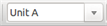
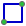

Manual de referencia
Copyright
Este documento está protegido por Copyright © 2010 a 2015 de sus autores, mencionados a continuación. Puede distribuirlo y/o modificarlo bajo los términos de la GNU General Public License (http://www.gnu.org/licenses/gpl.html), versión 3 o posterior, o la Creative Commons Attribution License (http : //creativecommons.org/licenses/by/3.0/), versión 3.0 o posterior.
Todas las marcas mencionadas en esta guía pertenecen a sus legítimos propietarios.
Contribuidores
Jean-Pierre Charras, Fabrizio Tappero.
Traducción
Antonio Morales <antonio1010.mr@gmail.com>, 2015
Realimentación
Por favor dirija cualquier reporte de fallo, sugerencia o nuevas versiones a:
-
Acerca de la documentación de KiCad: https://github.com/KiCad/kicad-doc/issues
-
Acerca del software KiCad: https://bugs.launchpad.net/kicad
-
Acerca del software KiCad i18n: https://github.com/KiCad/kicad-i18n/issues
Fecha de publicación y versión del software
Publicado el 30 de Mayo del 2015
1. Introducción a Eeschema
1.1. Descripción
Eeschema es un potente software de captura de esquemas distribuido como parte de KiCad y disponible bajo los siguientes sistemas operativos:
-
Linux
-
Apple OS X
-
Windows
Indistintamente del SO, todos los ficheros de Eeschema son 100% compatibles de un SO a otro.
Eeschema es una aplicación integrada donde todas las funciones para el dibujado, control, planos, gestión de bibliotecas y acceso al software de diseño del PCB son llevadas a cabo dentro del propio Eeschema.
Eeschema esta pensado para trabajar con PcbNew, el cual es el software de diseño de circuito impreso de KiCad. Además puede exportar ficheros de netlist, con todas las conexiones eléctricas, para otros software.
Eeschema incluye un editor de símbolos de componentes, que puede crear y editar componentes así como gestionar bibliotecas. Además integra las siguientes funciones adicionales esenciales en los software de captura de esquemas modernos:
-
Comprobador de reglas eléctricas (ERC) para el control automático de conexiones incorrectas y/o perdidas.
-
Exportación de ficheros de plano en múltiples formatos (Postscript, PDF, HPGL y SVG)
-
Generación de listas de materiales (vía scripts en Python, que permiten múltiples formatos configurables).
1.2. Resumen técnico
Eeschema esta limitado solo por la memoria disponible. Esto es, no existe limitación real en cuanto al número de componentes, pines de componentes, conexiones o hojas. En el caso de diagramas con múltiples hojas, la representación es jerárquica.
Eeschema puede utilizar diagramas con múltiples hojas de estos tipos:
-
Jerarquías simples (cada esquemas es usado solo una vez)
-
Jerarquías complejas (algunos esquemas son usados mas de una vez con múltiples instancias)
-
Jerarquías planas (los esquemas no están explícitamente conectados en el esquema principal)
2. Comandos Generales de Eeschema
2.1. Acceso a los comandos de Eeschema
Pueden ejecutarse los distintos mediante:
-
Haciendo clic en la barra de menú (parte superior de la pantalla)
-
Haciendo clic sobre los iconos de la parte superior de la pantalla (comandos generales)
-
Haciendo clic sobre los iconos de la parte derecha de la pantalla (comandos particulares o "herramientas")
-
Haciendo clic sobre los iconos de la pare izquierda de la pantalla (opciones de visualización)
-
Presionando los botones del ratón (importantes comandos complementarios). En particular un clic derecho del ratón abre el menú contextual del elemento bajo el cursor (Zoom, rejilla y edición de elementos)
-
Teclas de funcion (F1, F2, F3, F4, Insertar y barra espaciadora). Específicamente: La tecla "Escape" amenudo permite cancelar un comando en progreso. La tecla "Insertar" permite el duplicado del último elemento creado.
Aquí se muestran las posibles localizaciones de los comandos:

2.2. Comandos del Raton
2.2.1. Comandos Básicos
Botón Izquierdo
-
Clic simple: muestra las características del componente o del texto bajo el cursor en la barra de estado.
-
Doble clic: edita (si el elemento es editable) el componente o texto.
Botón derecho
-
Abre un menú emergente.
2.2.2. Operaciones sobre bloques
Puede mover, arrastrar, copiar y borrar áreas seleccionadas en todos los menús de Eeschema.
Las áreas son seleccionadas haciendo clic con el botón izquierdo del ratón y arrastrándolo sobre los elementos a seleccionar con el botón pulsado.
Presionando "Shift", "Ctrl" o "Shift + Ctrl" durante la selección se realizará respectivamente una operación de copiado, arrastrado o borrado:
botón izquierdo del ratón |
Mueve la selección. |
Shift + botón izquierdo del ratón |
Copia la selección. |
Ctrl + botón izquierdo del ratón |
Arrastra la selección. |
Ctrl + Shift + botón izquierdo del ratón |
Borra la selección. |
Cuando copie o arrastre, puede:
-
Hacer clic de nuevo para colocar los elementos.
-
Hacer clic con el botón derecho para cancelar.
Si se ha iniciado un comando de movimiento de bloques, puede seleccionarse otro comando mediante el menú contextual (botón derecho del ratón)

2.3. Teclas rápidas
-
La tecla ? muestra la lista de teclas rápidas actual
-
Las teclas rápidas pueden ser personalizadas mediante la opción "Editar teclas rápidas" en el menú Preferencias
Aquí se muestra la lista de teclas rápidas definida por defecto:

Todas las teclas rápidas pueden ser personalizadas mediante el editor de teclas rápidas:

2.4. Seleccionando el tamaño de la rejilla
En Eeschema, el cursor se mueve sobre una rejilla, la cual puede estar visible u oculta. La rejilla siempre esta visible en el gestor de bibliotecas.
Puede cambiar el tamaño de la rejilla mediante el menú contextual o vía el menú Preferencias/Opciones.
El tamaño por defecto de la rejilla es de 50 mil (0.050") o 1,27 milímetros.
Esta es la rejilla favorita para colocar componentes e hilos en el esquema, y para colocar pines cuando se diseña un símbolo en el editor de componentes.
Se puede trabajar también con una rejilla menor de 25 mil a 10 mil. Esto esta destinado solo al diseño del cuerpo del componente o a colocar textos y comentarios, no para colocar pines ni hilos.
2.5. Selección del Zoom
Para cambiar el nivel de zoom:
-
El botón derecho abre el menú contextual y permite seleccionar el zoom deseado.
-
O use las teclas de función:
-
F1: Zoom hacia adentro
-
F2: Zoom hacia afuera
-
F4 o simplemente clic con el botón central del ratón (sin mover el ratón): Centra la vista sobre la posición del puntero del ratón
-
-
Zoom sobre la ventana:
-
Rueda del ratón: Zoom hacia adentro/afuera
-
Shift + Rueda del ratón: Desplazamiento arriba/abajo
-
Ctrl + Rueda del ratón: Desplazamiento izquierda/derecha
-
2.6. Mostrando las coordenadas del cursor
Las unidades de visualización pueden ser pulgadas o milímetros. De todas formas, Eeschema siempre trabaja internamente en unidades de 0.001 pulgadas (mils)
La siguiente información se muestra en la parte inferior derecha de la pantalla.
-
El factor de zoom
-
La posición absoluta del cursor
-
La posición relativa del cursor
Puede iniciarse el punto inicial de las coordenadas relativas mediante la barra espaciadora. Esto es útil a la hora de realizar medidas entre dos puntos.

2.7. Barra de menú superior
El menú de la barra superior permite abrir y guardar esquemas, configuraciones de programa, y ver la documentación.

2.8. Barra de herramientas superior
Esta barra de herramientas permite el acceso a las principales funciones de Eeschema.
Si se ejecuta Eeschema de modo independiente, este es el conjunto de herramientas disponible:

Si Eeschema se ejecuta desde el gestor de proyectos (KiCad), las herramientas disponibles son:

Las herramientas para iniciar un proyecto no están disponibles ya que estas herramientas están en el Gestor de Proyectos.
|
Crea un nuevo esquema (solo en modo independiente) |
|
Abre un esquema (solo en modo independiente). |
|
Guardar el esquema (jerarquía) completo. |
|
Selecciona el tamaño de la hoja y edita el cuadro de título. |
|
Abre el diálogo de impresión. |
|
Elimina los elementos seleccionados durante un movimiento de bloques. |
|
Copia los elementos seleccionados al portapapeles durante un movimiento de bloques. |
|
Copia el ultimo elemento o bloque seleccionado en la hoja actual. |
|
Deshacer: Cancela el último cambio (hasta 10 cambios). |
|
Rehacer: (hasta 10 cambios). |
|
Llama a la herramienta de búsqueda de componentes y textos en el esquema. |
|
Llama a la herramienta de búsqueda y reemplazo de texto en el esquema. |
|
Zoom hacia adentro y afuera. |
|
Redibuja la pantalla; zoom hasta encajar. |
|
Ver y navegar por el árbol de jerarquía. |
|
Salir de la hoja actual y subir un nivel en la jerarquía. |
|
Llamar al editor de componentes Libedit para ver y modificar bibliotecas y símbolos de componentes. |
|
Muestra las bibliotecas (Viewlib). |
|
Anota los componentes. |
|
Comprobar reglas eléctricas (ERC), valida automáticamente las conexiones eléctricas. |
|
Exporta un fichero netlist (Pcbnew, SPICE, y otros formatos). |
|
Genera un fichero BOM (Lista de materiales). |
|
Edita una huella. |
|
Llama a CvPcb para asignar huellas a los componentes. |
|
Llama a Pcbnew para realizar el trazado del PCB. |
|
Importa de vuelta las huellas de los componentes (seleccionadas usando CvPcb) dentro de los campos "huella". |
2.9. Iconos de la barra de herramientas derecha.
Esta barra de herramientas contiene herramientas para:
-
Insertar componentes, hilos, buses, uniones, etiquetas, texto, etc.
-
Crear diseños Jerárquicos y símbolos de conexión.
|
|
Cancela el comando o herramienta activo. |
|
Navegación jerárquica: Esta herramienta permite abrir la hoja hija del esquema mostrado (clic en el símbolo de esta hoja hija), o volver arriba en la jerarquía (clic en un área libre de el esquema). |
|
|
Muestra el selector de componentes. |
|
|
Muestra el selector de símbolos de potencia. |
|
|
Dibuja un hilo. |
|
|
Dibuja un bus. |
|
|
Dibuja puntos de unión de hilos en buses. Estos elementos son solo gráficos y no crea una conexión, por lo que no deben ser usados para conectar un hilo con otro. |
|
|
Dibuja un punto de unión entre dos buses. |
|
|
Coloca una etiqueta de "No Conectado". Estas son colocadas en los pines de los componentes que no se van a conectar. Esto es útil durante el ERC para comprobar si los pines se han dejado sin conectar intencionadamente o se trata de un error. |
|
|
Coloca una unión. Ésta conecta dos hilos que se cruzan o un hilo y un pin, cuando esto puede ser ambiguo. (pej. si la punta de un hilo o un pin no esta conectado a la punta de otro hilo.). |
|
|
Coloca una etiqueta global. Dos hilos con la misma etiqueta en la misma hoja estarán conectados. Para conexiones entre dos hojas distintas Debe usar etiquetas jerárquicas o globales. |
|
|
Coloca una etiqueta global. Todas las etiquetas globales con el mismo nombre están conectadas incluso entre diferentes hojas. |
|
|
Coloca una etiqueta jerárquica. Esto hace posible realizar una conexión entre una hoja y la hoja padre donde esta contenida. |
|
|
Coloca una hoja jerárquica. Debe especificar el nombre de archivo para esta hoja hija. |
|
|
Importa las etiquetas jerárquicas desde una hoja hija. Estas etiquetas jerárquicas deben estar presentes en la hoja hija. Estas etiquetas son equivalentes a los pines de los componentes, y deben ser conectadas usando hilos. |
|
|
Coloca una etiqueta jerárquica en el símbolo de una hoja hija. Esta es colocada por su nombre y no requiere que la etiqueta exista previamente en la propia hoja hija. |
|
|
Dibuja una linea. Estas son solo representaciones gráficas y no conectan nada. |
|
|
Coloca comentarios en texto. Son solo representaciones gráficas. |
|
|
Coloca una imagen en formato bitmap. |
|
|
Borra el elemento seleccionado. Si varios elementos sobrepuestos son seleccionados, la prioridad se le da al mas pequeño (en orden decreciente de prioridad: unión, "No Conectado", hilo, bus, texto, componente) Esto también aplica para hojas jerárquicas. Nota: la función "Deshacer" de la barra de herramientas general le permite cancelar el ultimo borrado. |

2.10. Iconos de la barra de herramientas izquierda
Esta barra de herramientas gestiona las opciones de visualización:
|
Muestra y oculta la rejilla. |
|
Cambia las unidades a pulgadas. |
|
Cambia las unidades a milímetros. |
|
Elije la forma del cursor. |
|
Muestras los pines definidos como "invisibles. |
|
Permite el trazado de hilos y buses en cualquier dirección. |
2.11. Menús emergentes y de edición rápida
Un clic con el botón derecho abre un menú contextual para el elemento seleccionado. Este contiene:
-
Factor de zoom.
-
Ajuste de la rejilla.
-
Parámetros comúnmente editados del elemento seleccionado.
Menú emergente sin elemento seleccionado.
Editando una etiqueta.
Editando un componente.
3. Menú principal superior
3.1. Menú archivo

New Schematic Project |
Borra el esquema actual e inicializa uno nuevo |
Open Schematic Project |
Abre una jerarquía de esquema existente |
Open Recent |
Abre una lista de archivos recientemente abiertos |
Append Schematic Sheet |
Inserta el contenido de otra hoja dentro de la actual |
Save Schematic Project |
Guarda la hoja actual y toda su jerarquía. |
Save Current Sheet Only |
Guarda la hoja actual, pero no otras en la jerarquía. |
Save Current Sheet As… |
Guarda la hoja actual con un nombre nuevo. |
Page Settings |
Configura las dimensiones de la página y el bloque de título. |
Imprime la jerarquía del esquema (Ver también le cápitulo Plot e Imprimir). |
|
Plot |
Exporta a PDF, PostScript, HPGL o formato SVG (Ver cápitulo Plot e Imprimir). |
Close |
Cierra sin guardar. |
3.2. Menú Preferencias
3.2.1. Preferencias

Component Libraries |
Selecciona las rutas para las bibliotecas y búsqueda de bibliotecas. |
Set Colors Scheme |
Selecciona los colores para la pantalla, impresión y plot. |
Schematic Editor Options |
Opciones generales (unidades, tamaño de la rejilla, nombres de campos, etc.). |
Language |
Selecciona el lenguaje de uso. |
Hotkeys |
Lista, edita, exporta e importa los ajustes de teclas rápidas. |
Save Preferences |
Guarda los ajustes del proyecto a un archivo .pro. |
Load Preferences |
Carga los ajustes del proyecto desde un archivo .pro. |
3.2.2. Menú Preferencias / Bibliotecas de Componentes.

Este formulario se usa para configurar las rutas de las bibliotecas y búsquedas. Los parámetros de configuración son guardados en un fichero .pro. Es posible tener diferentes ficheros de configuración en diferentes directorios.
Eeschema busca, por orden:
-
El archivo de configuración (nombredelproyecto.pro) en el directorio actual. El fichero de configuración kicad.pro en el directorio de KiCad. Este fichero puede ser de este modo la configuración por defecto. Los valores por defecto si no se encuentra ningún archivo. Será necesario, al menos, rellenar la lista de bibliotecas a cargar, y posteriormente guardar la configuración.
La cuadro de selección Check for cache/library conflicts at schematic load se usa para configurar el comportamiento del rescate de conflictos en bibliotecas. Ver Rescatando la Caché de Componentes para mas información al respecto.
3.2.3. Menú Preferencias / Ajustar el esquema de colores

Esquemas de colores para varios elementos gráficos, y color del fondo de pantalla (entre blanco o negro)
3.2.4. Menú Preferencia / Opciones del editor de esquemas

Measurement units: |
Selecciona las unidades de las coordenadas para la pantalla y el cursor (pulgadas o milímetros). |
Grid Size: |
Selección del tamaño de la rejilla. Se recomienda trabajar con una resolución de rejilla normal (0.050 pulgadas o 1,27 mm). Rejillas mas pequeñas se usan para la construcción de componentes. |
Default bus width: |
Tamaño de la linea para dibujar buses. |
Default line width: |
Tamaño de linea para dibujar objetos que no tengan un tamaño de linea específico. |
Default text size: |
Tamaño del texto usado para crear nuevos elementos de texto o etiquetas. |
Repeat draw item horizontal displacement |
Incremento en el eje X durante el duplicado de elementos (normalmente 0) (despues de colocar un elementos como componentes, etiquetas o hilos, una copia se realiza mediante la tecla Insert) |
Repeat draw item vertical displacement |
Incremento en el eje Y durante el duplicado de elementos (un valor normal es 0.100 pulgadas o 2,54 mm) |
Repeat label increment: |
Incremento del valor de una etiqueta durante el duplicado de textos que acaben en un numero, como miembros de buses (valor usual 1 o -1) |
Auto save time interval: |
Tiempo en minutos entre copias de seguridad. |
Part id notation: |
Estilo del sufijo que se usa para denotar a las partes en componentes multiparte (U1A, U1.A, U1-1, etc.) |
Show Grid: |
Si esa marcado muestra la rejilla. |
Show hidden pins: |
Muestra los pines invisibles (o Ocultos), normalmente los pines de potencia. Si esta marcado habilita la visualización de los pines de potencia. |
Do not center and warp cursor on zoom: |
Al hacer zoom, mantiene la posición y el cursor donde estos estén. |
Use middle mouse button to pan |
Si esta habilitad, la hoja puede desplazarse mediante el uso del botón central del ratón. |
Limit panning to scroll size |
Cuando esta habilitado, el botón central del ratón no puede mover el área de la hoja fuera del área mostrada. |
Pan while moving object |
Si está marcada, automáticamente desplaza la pantalla si el cursor se desplaza fuera de la misma durante el dibujado o arrastre de elementos. |
Allow buses and wires to be placed in H or V orientation only |
Si está marcado, los buses e hilos solo puede ser verticales u horizontales. En otro caso, los buses e hilos pueden ser colocados en cualquier orientación. |
Show page limits |
Si se marca, muestra los limites de la pagina en la pantalla. |
3.2.5. Preferencias y Lenguaje
Use el modo por defecto. Otros lenguajes están disponibles para propósitos de desarrollo.
3.3. Menú ayuda
Accede a la ayuda en-linea (este documento) por un tutorial extenso sobre KiCad. Use “Copy Version Information” cuando envíe reportes de errores para identificar su versión del software y sistema.
4. Barra de Herramientas de uso general
4.1. Gestión de hoja
El icono de Gestión de Hoja,
 , permite definir el tamaño de la hoja y el contenido del bloque de
título.
, permite definir el tamaño de la hoja y el contenido del bloque de
título.

El numerado de las hojas se actualiza automáticamente. Puede ajustar la fecha actual presionando el botón a la derecha de "Issue Date", pero esto no se actualizará automáticamente.
4.2. Opciones del editor de esquemas.
4.2.1. Opciones generales
4.2.2. Plantilla de nombres de campos
Puede definir una serie de campos personalizados que existirán por defecto en cada componente (incluso si se dejan en blanco)

4.3. Herramienta de Busqueda
El icono de búsqueda,
 , puede usarse
para acceder a la herramienta de búsqueda.
, puede usarse
para acceder a la herramienta de búsqueda.

Puede buscar una referencia, un valor, o una cadena de texto en la hoja actual o en toda la jerarquía. Una vez encontrada, el cursor se posicionara sobre el elemento encontrado en la hoja relevante.
4.4. Herramienta de Netlist
El icono de Netlist,
 , abre la
herramienta de generación de netlist.
, abre la
herramienta de generación de netlist.
El fichero de netlist creado describe todas las conexiones de la jerarquía completa.
En una jerarquía multi-hoja, cualquier etiqueta local es visible solo dentro de la hoja a la que pertenece Por eso, la etiqueta TOTO de la hoja 3 es distinta de la etiqueta TOTO de la hoja 5 (si no se ha añadido intencionadamente una conexión para conectarlas). Esto es debido al hecho de que el nombre de la ruta a la hoja está internamente asociado con la etiqueta local.
Nota 1:
La longitud de las etiquetas no tiene limitación en Eeschema, pero el software que utilice el netlist generado puede tener limitaciones en este aspecto.
Nota 2:
Evite los espacios en la etiquetas, porque estas aparecerán como palabras separadas. Esta no es una limitación de Eeschema, sino de muchos formatos de netlist que asumen que una etiqueta no tiene espacios.

Opciones:
Formato por defecto:
Marque para seleccionar Pcbnew como el formato por defecto
También se pueden generar otros formatos:
-
Orcad PCB2
-
CadStar
-
Spice, para simuladores
Se pueden ejecutar plugins externos para ampliar la lista de formatos de netlist (un plugin para PadsPcb fue añadido aquí).
4.5. Herramienta de Anotado
El icono
 accede a la
herramienta de anotado. Esta herramienta realiza un nombrado automático de
todos los componentes del esquema.
accede a la
herramienta de anotado. Esta herramienta realiza un nombrado automático de
todos los componentes del esquema.
Para componentes multi-parte (como el 7400 TTL que contiene 4 puertas), un sufijo multi-parte es añadido (así un 7400 TTL designado como U3 será dividido en U3A, U3B, U3C y U3D).
Puede anotar todos los componentes sin condicionantes, o solo los componentes nuevos, por ejemplo aquellos que no fueron previamente anotados.

Alcance
Usar el esquema completo. Todas las hojas son re-anotadas (opción típica)
Usar solo la página actual. Solo la página actual es re-anotada (esta opción es usada solo en casos especiales, por ejemplo para evaluar la cantidad de resistencias en la hoja actual).
Mantener la anotación existente. Anotación condicional, solo los componentes nuevos serán anotados (opción típica)
Borrar la anotación existentes. Anotación incondicional, todos los componentes serán re-anotados (esta opción se usa cuando existen referencias duplicadas)
Borrar, pero no intercambiar ningún componente multi-parte anotado. Esto mantiene todos los grupos de unidades múltiples (pej. U2A, U2B) juntos cuando se re-anote.
Orden de Anotado
Selecciona el orden en el que los componentes serán numerados.
Tipo de Anotado
Selecciona el método por el que los números serán generados.
4.6. Herramienta de Comprobación de Reglas Eléctricas
Mediante el icono
 se accede a la
herramienta de comprobación de reglas eléctricas (ERC).
se accede a la
herramienta de comprobación de reglas eléctricas (ERC).
Esta herramienta realiza una verificación del diseño y es particularmente útil para detectar conexiones olvidadas e inconsistencias.
Una vez que se ha ejecutado el ERC, Eeschema coloca marcas para remarcar los problemas. El diagnostico puede ser obtenido haciendo clic sobre las marcas. También puede generarse un fichero de error.
4.6.1. Ventana principal del ERC

Errores que son mostrados en la ventana del Comprobador ERC:
-
Número total de errores y avisos.
-
Número de errores.
-
Número de avisos.
Opciones:
-
Crear fichero del reporte ERC: seleccione esta opción para generar un reporte del ERC en fichero.
Comandos:
-
Borrar Marcas: borra todas las marcas de error/aviso del ERC
-
Ejecutar: Realiza la comprobación de reglas eléctricas.
-
Cerrar: termina la ventana de diálogo.
Nota:
-
Haciendo clic sobre un mensaje de error se salta a la marca correspondiente en el esquema.
4.6.2. Ventana de opciones del ERC

Esta pestaña permite establecer las reglas de conectividad entre pines; puede elegir entre 3 opciones para cada caso;
-
Sin error
-
Aviso
-
Error
Cada cuadro de la matriz puede ser modificado haciendo clic en el.
4.7. Herramienta Lista de Materiales
El icono
 da acceso al generador de
listas de materiales (BOM). Este menú permite la generación de un fichero
con una lista de componentes y/o conexiones jerárquicas (etiquetas globales)
da acceso al generador de
listas de materiales (BOM). Este menú permite la generación de un fichero
con una lista de componentes y/o conexiones jerárquicas (etiquetas globales)

El generador de BOM de Eeschema hace uso de plugins externos, generalmente en formato XSLT o Python. Algunos son provistos y serán instalados dentro de directorio KiCad en sus archivos de programa.
Un conjunto de propiedades de componente útil para usar en un listado BOM son:
-
Valor - nombre único para cada componente usado.
-
Huella - tanto asignada manualmente como anotada de vuelta (ver abajo)
-
Campo1 - Nombre del fabricante
-
Campo2 - Número de referencia del Fabricante.
-
Campo3 - Número de referencia del Distribuidor.
Por ejemplo:

4.8. Herramienta para la importación de asignaciones de huellas:
4.8.1. Acceso:
El icono
 permite el acceso a la herramienta para traer de vuelta la
anotación.
permite el acceso a la herramienta para traer de vuelta la
anotación.
Esta herramienta permite que los cambios en las asignaciones de huellas realizadas en PcbNew puedan ser importados de vuelta a los campos correspondientes en Eeschema.
5. Creación y Edición de Esquemas
5.1. Introducción
Un esquema puede ser representado por una única hoja, pero, si fuera suficientemente grande, podría requerir varias hojas.
Un esquema representado por varias hojas es jerárquico, y todas sus hojas (cada una representada por su propio fichero) constituyen un proyecto de Eeschema. El uso de esquemas jerárquicos será descrita en el capitulo Esquemas Jerárquicos
5.2. Consideraciones generales
Un esquema diseñado con Eeschema es mas de una simple representación gráfica de un dispositivo electrónico. Éste es normalmente el punto de entrada a una cadena de desarrollo que permite:
-
Validar una serie de reglas (Comprobador de Reglas Eléctricas) para detectar errores y omisiones.
-
Generar automáticamente listas de materiales (BOM)
-
Generando netlist parar software de simulación como SPICE
-
Generando netlist para transferir al diseño del PCB
Un esquema consiste principalmente en componentes, hilos, etiquetas, uniones, buses y puertos de potencia. Para aclarar el esquema, se pueden añadir elementos meramente gráficos como entradas de bus, comentarios y polilíneas.
5.3. Proceso de desarrollo

Los componentes son añadidos al esquema desde las bibliotecas de componentes. Después se realiza el esquema, se genera el netlist, el cual posteriormente se usa para importar el conjunto de conexiones y huellas dentro de PcbNew.
5.4. Ubicación y edición de componentes
5.4.1. Encontrar y ubicar un componente
Para añadir un componente dentro de un esquema puede usarse el icono
 . Una ventana de
diálogo le permite escribir el nombre del componente a cargar.
. Una ventana de
diálogo le permite escribir el nombre del componente a cargar.

La ventana de elección de componentes filtrará por nombre de componente, palabras clave y descripción de acuerdo al texto escrito en el campo de búsqueda.
Antes de colocar el componente en el esquema, puede rotarlo, reflejarlo, y editar sus campos, bien utilizando la tecla rápida correspondiente o mediante el menú contextual desplegado al hacer clic derecho. Esto también puede realizarse del mismo modo una vez ubicado el componente.
Aquí se muestra un componente durante su ubicación:

5.4.2. Puertos de potencia
Un símbolo de puerto de potencia es un componente (estos símbolos están
agrupados en la biblioteca "power"), así que pueden ser usados a través del
interfaz de carga de componente, Sin embargo, como la colocaciṕn de éstos es
frecuente, la herramienta
 esta disponible. Esta herramienta es similar, excepto que la búsqueda es
realizada directamente en la biblioteca "power".
esta disponible. Esta herramienta es similar, excepto que la búsqueda es
realizada directamente en la biblioteca "power".
5.4.3. Edición y modificación de componentes (componentes ya situados en el esquema)
Existen dos maneras de editar un componente:
-
Modificación del componente mismo: posición, orientación, selección de unidad en componentes multi-unidad.
-
Modificación de uno de los campos del componente: referencia, valor, huella, etc.
Cuando un componente ha sido ubicado, se puede modificar su valor (particularmente para resistencias, condensadores, etc), pero es útil asignarle un numero de referencia correctamente, o seleccionar la unidad (excepto para componentes con unidades bloqueadas, los cuales tienen que asignarse manualmente). Esto puede realizarse automáticamente mediante la función de anotado.
Modificación de componentes
Para modificar alguna característica de un componente, posicione el cursor sobre el componente, y entonces, bien:
-
Haga doble clic sobre el componente para abrir el formulario completo de edición.
-
Haga clic derecho para abrir el menú contextual y use uno de los comandos: Mover, Orientar, Editar, Borrar, etc,
Modificación de los campos de texto
Puede modificar la referencia, valor, posición, orientación, tamaño del texto y visibilidad de los campos:
-
Haga doble clic sobre el campo de texto para modificarlo.
-
Haga clic derecho para abrir el menú contextual y use uno de los comandos: Mover, Rotar, Editar, Borrar, etc.
Para mas opciones, o para crear mas campos, doble clic sobre el componente para abrir el formulario de propiedades del componente.
Cada campo puede ser visible u oculto, y mostrado horizontal o verticalmente. La posición mostrada es siempre indicada para un componente mostrado por defecto (ni rotado ni invertido) y es relativa al punto de anclaje del componente.
La opcion "Resetear a la posición por defecto" ajusta el componente a su orientación original, y reajusta las opciones, tamaño y posición para cada campo. Sin embargo, los campos de texto no son modificado ya que esto podría causar la rotura del esquema.
5.5. Hilos, Buses, Etiquetas, Puertos de potencia
5.5.1. Introducción
Todos estos elementos de dibujo pueden ser colocados con las herramientas de la barra de herramientas lateral derecha.
Estos elementos son:
-
Wires: La mayoría de las conexiones entre componentes.
-
Buses: para unir gráficamente etiquetas de bus
-
Polilíneas: para representación gráfica.
-
Uniones: para crear conexiones entre dos hilos o buses que se cruzan.
-
Entradas de Bus: para mostrar conexiones entre hilos y buses. Representación gráfica solamente.
-
Etiquetas: para etiquetar o crear conexiones.
-
Etiquetas globales: para crear conexiones entre hojas.
-
Textos: para comentarios y anotaciones.
-
Marca de "No Conectado": para indicar que un pin no necesita ninguna conexión.
-
Hojas Jerárquicas, y sus pines de conexión.
5.5.2. Conexiones (Hilos y etiquetas)
Existen dos métodos de establecer conexiones:
-
Hilos entre dos pines.
-
Etiquetas.
La siguiente figura muestra los dos métodos:

Nota 1:
El punto de "contacto" de una etiqueta es la esquina inferior izquierda de la primera letra de la etiqueta. Este punto es mostrado mediante un pequeño cuadrado cuando no esta conectado.
Este punto debe estar en contacto con el hilo, o sobreponerse al final de un pin de forma que la etiqueta sea vista como conectada.
Nota 2:
Para establecer una conexión, un segmento de hilo debe estar conectado en su extremo a otro segmento de hilo o a un pin.
Si existe superposición (si un hilo pasa sobre un pin, pero no es conectado al extremo del pin) no existe conexión.
Nota 3:
Los hilos que se cruzan no están implícitamente conectados. Es necesario unirlos mediante un punto de unión si se desea que exista conexión entre ambos.
En la figura previa (los hilos conectados a los pines 22, 21, 20 y 19 del componente DB25FEMALE) muestran el caso de conexión usando el símbolo de unión.
Nota 4:
Si dos etiquetas distintas son colocadas en el mismo hilo, éstas están conectadas entre si y se convierten en equivalentes: todos los elementos conectados a una u otra etiquetas están conectados entre si.
5.5.3. Conexiones (Buses)
En el siguiente esquema, múltiples pines están conectados a buses.

Miembros del Bus
Desde el punto de vista del esquema, un bus es una colección de señales que comienzan con un prefijo común y finalizan con un numero. Por ejemplo, PCA0, PCA1 y PCA2 son miembros del bus PCA.
El bus completo es llamado PCA[N..m] donde N y m son el primer y el ultimo numero de hilo de este bus. Así si PCA tiene 20 miembros desde 0 a 19, el bus completo es nombrado PCA[0..19]. Una colección de señales como PCA0, PCA1, PCA2, WRITE, READ no pueden ser contenidas en un bus
Conexión entre miembros de bus
Los pines conectados mediante el mismo miembro de un bus deben ser conectados mediante etiquetas. No es posible conectar un pin directamente a un bus; este tipo de conexión será ignorado por Eeschema.
En el ejemplo anterior, las conexiones son realizas por las etiquetas colocadas sobre los hilos conectados a los pines. Las entradas de bus (segmentos de hilo a 45 grados) son solo representaciones gráficas, y no forman necesariamente conexiones lógicas.
De hecho, usando el comando repetir (tecla Insertar), las conexiones pueden realizarse rápidamente del siguiente modo, si los pines de los componentes están alineados en orden creciente (caso típico de componentes como memorias, microprocesadores …):
-
Coloque la primera etiqueta (por ejemplo PCA0)
-
Use el comando repetir tanto como sea necesario para colocar el resto de miembros. Eeschema creará automáticamente las siguiente etiquetas (PCA1, PCA2…) alineadas verticalmente, teóricamente sobre la posición de los otros pines.
-
Dibuje el hilo bajo la primera etiqueta. Después utilice el comando repetir para colocar los otros hilos bajo el resto de etiquetas.
-
Si fuera necesario, coloque las entradas al bus del mismo modo (coloque la primera entrada y utilice el comando repetir)
|
Nota
|
En el menú Preferencias/Opciones, puede ajustar los parámetros para las repeticiones.
|
Conexiones globales mediante buses
Puede necesitar conexiones mediante buses, con el fin de conectar dos buses con distinto nombre, o en caso de una jerarquía, para crear conexiones entre hojas diferentes. Puede realizar esta conexiones de la siguiente manera.
Los buses PCA[0..15], ADR[0..7] y BUS[5..10] están conectados juntos (note la unión aquí porque el tramo vertical del bus se une en la mitad del tramo horizontal de bus)
Mas precisamente, los miembros correspondientes están conectados entre si: PCA0 y ADR0 están conectados (así como PCA1 y ADR1 … PCA7 y ADR7)
Además, PCA5, BUS5 y ADR5 estan interconectados (como PCA6, BUS6 y ADR6, y PCA7, BUS7 y ADR7)
PCA8 y BUS8 están también conectados (así como PCA9 y BUS9, y también PCA10 y BUS10)
5.5.4. Conexión de puertos de alimentación
Cuando los pines de alimentación de los componentes son visibles, estos deben ser conectados igual que cualquier otra señal.
Los componentes como puertas lógicas y flip-flops pueden tener puertos de alimentación ocultos. Tenga cuidado con éstos porque:
-
No puede conectar hilos debido a su invisibilidad.
-
No se conoce sus nombres.
Y además, seria una mala idea hacerlos visibles y conectarlos como los otros pines debido a que el esquema podría volverse ilegible y no estar en concordancia con las convenciones usuales.
|
Nota
|
Si quiere forzar que se muestren estos pines de alimentación invisibles,
debe seleccionar la opción “Mostrar pines de alimentación invisibles” en
el formulario Preferencias/Opciones del menú principal, o el icono
|
Eeschema automáticamente conecta los pines de alimentación con el mismo nombre a la red de alimentación con ese nombre. Puede ser necesario unir redes de alimentación con distinto nombre (por ejemplo, "GND" en componentes TTL y "VSS" en componentes MOS); use para esto los puertos de potencia.
No es recomendable usar etiquetas para conexiones de alimentación. Estas solo tienen un alcance de conexión local, y podrían no conectar los pines de alimentación invisibles.
La siguiente figura muestra un ejemplo de conexiones con puertos de potencia.

En este ejemplo, la tierra (GND) esta conectada al puerto de potencia VSS, y el puerto de potencia VCC esta conectado a VDD
Dos símbolos PWR_FLAG son visibles. Estos indican que los dos puertos de potencia VCC y GND están realmente conectados a fuentes de alimentación. Sin esos dos símbolos, la herramienta ERC diagnosticaría: Warning: power port not powered.
Todos estos símbolos son componentes de la biblioteca “power”.
5.5.5. Marca "No Conectado"
Estos símbolos son muy útil para evitar avisos indeseados en el análisis ERC. El comprobador de reglas eléctricas asegura que ninguna conexión ha sido dejada sin conectar accidentalmente.
Si los pines realmente deben estar sin conectar, es necesario colocar una
marca de "No Conectado" (herramienta
 ) sobre esos pines. Estos símbolos no tienen ninguna
influencia sobre los netlists generados.
) sobre esos pines. Estos símbolos no tienen ninguna
influencia sobre los netlists generados.
5.6. Complementos de Dibujo
5.6.1. Comentarios de Texto
Puede ser útil (para ayudar a entender el esquema) colocar anotaciones como
campos de texto y cuadros. Los campos de texto (herramienta
 ) y polilínea (herramienta
) y polilínea (herramienta
 ) están pensado para estos usos, al
contrario de las etiquetas e hilos que son elementos de conexión.
) están pensado para estos usos, al
contrario de las etiquetas e hilos que son elementos de conexión.
Aquí puede encontrar un ejemplo de un cuadro con un comentario en texto.

5.6.2. Bloque de titulo de la hoja
El bloque de titulo de la hoja se edita con la herramienta
 .
.

El número de hoja (Hoja X/Y) es actualizado automáticamente.
5.7. Rescatando componentes en cache
Por defecto, Eeschema carga los símbolos de los componentes de las bibliotecas de acuerdo a las rutas ajustadas para las mismas. Esto puede causar problemas cuando se carguen proyectos muy antiguos: si los símbolos fueron cambiados desde que fueron usados en el proyecto, los símbolos del proyecto se reemplazaran automáticamente con las nuevas versiones. Estas nuevas versiones puede no ajustarse correctamente o pueden estar orientados de forma diferente, resultando en un esquema con errores.
Sin embargo, cuando se guarda un proyecto, una copia de la biblioteca se guarda con el. Esto permite que el proyecto sea distribuido sin las bibliotecas completas. Si carga un proyecto donde hay símbolos presentes tanto en su cache (copia) como en las bibliotecas del sistema, Eeschema examinará las bibliotecas en busca de conflictos. Cualquier conflicto encontrado se mostrará en la siguiente ventana:

Puede observar en este ejemplo que el proyecto original usaba un diodo con el cátodo mirando hacia arriba, pero la biblioteca actualmente contiene uno con el cátodo mirando hacia abajo. ¡Este cambio puede arruinar el proyecto! Pulsando OK causará que el viejo símbolo sea salvado dentro de una biblioteca especial “rescue”, y todos los componentes que usen este símbolo serán renombrados para evitar conflictos de nombrado.
Si pulsa Cancelar, ningún rescate sera realizado, de modo que Eeschema cargará todos los nuevos componentes por defecto. Dado que no se realizaron cambios, todavía puede volver y ejecutar la función de rescate de nuevo: elija "Rescatar Componentes en Cache" en el menú de herramientas para volver a llamar a la ventana de nuevo.
Si prefiere no ver esta ventana, puede pulsar "Nunca Mostrar de Nuevo". Por defecto no hará nada y permitirá la carga de los componentes nuevos. Esta opción puede ser revertida en la preferencias de las bibliotecas de componentes.
6. Esquemas Jerarquicos
6.1. Introducción
Una representación jerárquica es generalmente una buena solución para proyectos mas grandes que unas pocas hojas. Si quiere gestionar este tipo de proyectos, sera necesario:
-
Usar hojas grandes, lo que resulta en problemas para imprimir y manejar las hojas.
-
Usar varias hojas, lo que conduce a una estructura jerárquica.
El esquema completo consiste en una hoja principal, llamada hoja raíz, y una serie de hojas hijas que constituyen la jerarquía. Además, una subdivisión adecuada del diseño en hojas separadas, a menudo mejora su legibilidad.
Desde la hoja raíz, debe ser posible encontrar todas las hojas hijas. La
gestión de esquemas jerárquicos es bastante fácil con Eeschema, gracias a su
"navegador de jerarquía" integrado, accesible mediante el icono
 en la barra de
herramientas superior
en la barra de
herramientas superior
Hay dos tipos de jerarquías que pueden existir simultáneamente: La primera acaba de ser descrita y es de uso genera. La segunda consiste en crear componentes en la biblioteca que aparecen como componentes tradicionales en el esquema, pero que realmente corresponden a un esquema que describe su estructura interna.
Este segundo tipo es usado en el desarrollo de circuitos integrados, pero en este caso tiene que usar bibliotecas de funciones en el esquema que este dibujando.
Eeschema actualmente no soporta este segundo tipo.
Una jerarquía puede ser:
-
simple: una hoja dada es usada solo una vez
-
compleja: una hoja dada es usada mas de una vez (múltiples instancias)
-
plana: que es una jerarquía simple, donde las conexiones entre hojas no son dibujadas.
Eeschema puede tratar con estas tres jerarquías.
La creación de esquemas jerárquicos es fácil, la jerarquía completa es gestionada comenzando desde el esquema raíz, como si solo tuviera un esquema.
Los dos pasos importantes que debe entender son:
-
Como crear una hoja hija.
-
Como crear conexiones eléctricas entre hojas hijas
6.2. Navegando en la Jerarquía
Navegar por las hojas hijas es muy fácil gracias a la herramienta de
navegación accesible vía el botón
 de la barra de
herramientas superior.
de la barra de
herramientas superior.
Cada hoja es alcanzable haciendo clic en su nombre. Para acceso rápido, clic derecho sobre un nombre y elegir "Entrar a la Hoja"
Puede alcanzar la hoja raíz gracias a la herramienta
 de la
barra de herramientas de la derecha Después la herramienta de navegación
sera seleccionada.
de la
barra de herramientas de la derecha Después la herramienta de navegación
sera seleccionada.
-
Haga clic sobre el nombre de una hoja para seleccionar la hoja.
-
Haga clic en cualquier otro lugar para seleccionar la hoja padre.
6.3. Etiquetas locales, jerárquicas y globales
6.3.1. Propiedades
Las etiquetas locales, herramienta
 , son señales
de conexión solo dentro de una hoja. Las etiquetas jerárquicas (herramienta
, son señales
de conexión solo dentro de una hoja. Las etiquetas jerárquicas (herramienta
 )
son señales de conexión solo entre una hoja y un pin jerárquico situado en
la hoja padre.
)
son señales de conexión solo entre una hoja y un pin jerárquico situado en
la hoja padre.
Las etiquetas globales (herramienta
 ) son señales de conexión a lo largo de toda la jerarquía. Los
pines de potencia ( tipos power in y power out) invisibles son como
etiquetas globales porque están conectados entre ellos a lo largo de toda la
jerarquía.
) son señales de conexión a lo largo de toda la jerarquía. Los
pines de potencia ( tipos power in y power out) invisibles son como
etiquetas globales porque están conectados entre ellos a lo largo de toda la
jerarquía.
|
Nota
|
Dentro de una jerarquía (simple o compleja) se pueden usar etiquetas jerárquicas y/o etiquetas globales. |
6.4. Guía de creación de jerarquías
Tiene que:
-
Colocar en la hoja padre un símbolo de jerarquía llamado "hoja símbolo".
-
Entre dentro del nuevo esquema (hoja hija) con el navegador y dibuje su esquema en ella, como cualquier otro esquema.
-
Dibuje las conexiones eléctricas entre los dos esquemas colocando Etiquetas Globales (HLabels) en el nuevo esquema (hoja hija), y etiquetas con el mismo nombre en la hoja padre, conocidas como SheetLabels. Estas SheetLabels conectarán el símbolo de la hoja en la hoja padre a otros elementos del esquema como si de pines estándar se tratara.
6.5. Símbolo de la hoja
Dibuje un rectángulo, definido por dos puntos de su diagonal, que simbolizará la hoja hija.
El tamaño de este rectángulo debe permitirle colocar mas tarde etiquetas particulares, pines de jerarquía, correspondientes a las etiquetas globales (HLabels) en la hoja hija.
Estas etiquetas son similares a los típicos pines de los
componentes. Seleccione la herramienta
 .
.
Haga clic para colocar la esquina superior izquierda del rectángulo. Haga clic de nuevo para colocar la esquina inferior derecha, dejando un rectángulo suficientemente grande.
Se le pedirá que escriba el nombre de archivo y en nombre de la hoja para esta hoja hija (con el fin de alcanzar el correspondiente esquema, usando el navegador de jerarquía)

Debe introducir al menos el nombre de archivo. Si no especifica un nombre de hoja, se usará el nombre de fichero como nombre de pagina (modo usual de hacerlo)
6.6. Conexion - Pines de Jerarquia
Debe crear aquí los puntos de conexión (pines de jerarquía) para el símbolo que acaba de crear.
Estos punto de conexión son similares a los pines normales de los componentes, con la posibilidad de conectar un bus completo con solo un punto de conexión.
Existen dos maneras de hacer esto.
-
Colocar los distintos pines antes de dibujar la hoja hija (ubicación manual)
-
Colocar los distintos pines tras dibujar la hoja hija, y las etiquetas globales (colocación semi-automática)
Es preferible el empleo de la segunda opción.
Colocación manual:
-
Seleccione la herramienta .
-
Haga clic en el símbolo de jerarquía donde desee ubicar este pin.
Mire el ejemplo mas abajo de la creación de un pin de jerarquía llamado "CONNEXION"

Puede definir sus atributos gráficos, como el tamaño, o después editando el pin (Botón derecho y seleccionar "Editar" en el menú contextual).
Varios símbolos de pin están disponibles:
-
Entrada
-
Salida
-
Bidireccional
-
Tri-Estado
-
Pasivo
Estos pines son solo representaciones gráficas, y no tienen otro rol.
Colocación Automática:
-
Seleccione la herramienta
 .
.
-
Haga clic en el símbolo de jerarquía desde el que quiera importar los pines correspondientes a las etiquetas globales colocadas en el correspondiente esquema. Aparece un pin de jerarquía si existe una etiquetas global, por ej. que no corresponda a un pin ya ubicado.
-
Haga clic donde quiera colocar este pin.
Todos los pines necesarios pueden ser colocados rápidamente y sin error. Su aspecto estará en concordancia con el resto de las etiquetas globales.
6.7. Conexiones - Etiquetas de Jerarquía
Cada pin del símbolo de hoja recién cread debe corresponder con una etiqueta
llamada etiqueta de jerarquía en la hoja hija. Las etiquetas de jerarquía
son similares a las etiquetas pero estas proveen conexión entre la hoja hija
y la padre. La representación gráfica de las dos etiquetas complementarias
(pin y HLabel) es similar. La creación de etiquetas de jerarquía es
realizada con la herramienta
 .
.
Debajo se muestra un ejemplo de hoja padre:

Observe el pin VCC_PIC conectado al conector JP1
Aquí se muestra las conexiones correspondientes en la hoja hija:

Encontramos, de nuevo, las dos correspondientes etiquetas de jerarquía, que proveen la conexión entre las dos hojas jerárquicas.
|
Nota
|
Puede usar etiquetas y pines de jerarquía para conectar dos buses, de acuerdo con la sintaxis (Bus[N..m]) anteriormente descrita. |
6.7.1. Etiquetas, etiquetas jerárquicas, etiquetas globales y pines de potencia invisibles
A continuación se indican varios modos de proveer conexión, además de las conexiones mediante hilos.
Etiquetas simples
Las etiquetas simples tienen capacidad de conexión local, limitada a la hoja del esquema donde están ubicadas. Esto es debido a que:
-
Cada hoja tiene un número de hoja.
-
Este número de hoja es asociado a las etiquetas.
Entonces, si coloca la etiqueta "TOTO" en la hoja nº 3, en realidad el verdadero nombre de la etiqueta es "TOTO_3". Si también coloca la etiqueta "TOTO" en la hoja nº 1 (hoja raíz) está colocando una etiqueta llamada "TOTO_1", diferente de "TOTO_3". Esto es siempre cierto, incluso si hay una sola hoja.
Etiquetas de Jerarquia
Todo lo dicho para las etiquetas simples es también cierto para las etiquetas jerárquicas.
De este modo, una etiqueta HLabel llamada "TOTO" se considera conectada a una etiqueta local llamada "TOTO" en la misma hoja, pero no conectada a una HLabel o etiqueta local "TOTO" en otra hoja.
Sin embargo una HLabel se considera conectada al correspondiente símbolo SheetLabel en el símbolo de jerarquía colocado en la hoja padre.
Pines de potencia invisibles
Anteriormente se comento que los pines de potencia invisibles estaban conectados entre sí si estos tenían el mismo nombre. Por consiguiente, todos los pines de potencia declarados "Invisible Power Pins" y llamados VCC están conectados y forman el nodo equipotencial VCC, indistintamente de la hoja en la que estén ubicados.
Esto significa que si coloca una etiqueta VCC en una hoja hija, ésta no estará conectada a los pines VCC ya que la etiqueta es realmente VCC_n, donde n es el numero de hoja.
Si quiere que esta etiqueta VCC este realmente conectada al nodo VCC, tiene que ser explícitamente conectada a un pin de potencia invisible, por medio de un puerto de potencia VCC.
6.7.2. Etiquetas globales
Las etiquetas globales que tienen idéntico nombre están conectadas a lo largo de la jerarquía completa.
(Las etiquetas de potencia como vcc … son etiquetas globales)
6.8. Jerarquías Complejas
Aquí se muestra un ejemplo. El mismo esquema es usado dos veces (dos instancias). Las dos hojas comparte el mismo esquema ya que el nombre de archivo es el mismo para las dos hojas (“other_sheet.sch”). Pero el nombre de las hojas debe ser diferente.

6.9. Jerarquías Planas
Puede crear un proyecto usando múltiples hojas sin crear conexiones entre éstas (jerarquía plana) si se respetan las siguientes reglas:
-
Debe crear una hoja padre que contenta a las otras hojas, y que actúa como enlace entre ellas.
-
No se necesitan conexiones explicitas.
-
Todas las conexiones entre hojas usaran etiquetas globales en vez de etiquetas de jerarquía.
Aquí se muestra un ejemplo de la hoja padre.

Estas son las dos paginas, conectadas por etiquetas globales.
Esta es la hoja pic_programmer.sch.

Y esta pic_sockets.sch.

Observe las etiquetas globales.

7. Anotación automática de componentes
7.1. Introducción
La herramienta de anotación automática le permite asignar automáticamente un
identificador a los componentes de su esquema. Para componentes con
múltiples instancias, asigne sufijos para cada instancia con el fin de
minimizar el número de estos paquetes. La herramienta de anotación
automática es accesible a través del icono
 . Aquí se muestra su
ventana principal.
. Aquí se muestra su
ventana principal.
Existen varias posibilidades disponibles:
-
Anotar todos los componentes (reinicia las opciones de anotado existentes)
-
Anotar todos los componentes, pero no cambiar las anotaciones de los componentes con múltiples instancias anotados previamente.
-
Anotar solo los componentes nuevos (pej. aquellos cuyas referencias acaben con el símbolo ? como IC? ) (mantiene las anotaciones existentes)
-
Anotar toda la arquitectura (use la opción: usar esquema completo)
-
Anotar solo la hoja actual (use la opción: solo página actual)
La opción “Reiniciar, pero no borrar ninguna anotación de componentes multi componente” mantiene todas las asociaciones entre las distintas instancias. Es decir, si tiene los componentes U2A y U2B, estos serán re-anotados como U1A y U1B respectivamente, pero nunca serán re-anotados como U1A y U2A, ni U2B y U2A. Esto es útil si quiere garantizar que se mantienen las distribuciones de pines seleccionadas, si se han decidido previamente cual es el mejor lugar para cada una de las sub-unidades.
La elección del orden de anotación determina el método usado para fijar los números de referencias dentro de cada hoja de la arquitectura.
Exceptuando casos particulares, una anotación automática se aplica al proyecto completo (todas las hojas) y a todos los componentes nuevos, si no desea cambiar las anotaciones realizadas previamente.
El campo Tipo de Anotación selecciona el método usado para calcular los identificadores para las referencias:
-
Usar el primer número libre en el esquema: Los componentes son referenciados comenzando desde 1 (para cada prefijo de referencia distinta). Si existe un referenciado previo, se usaran los números que no estén en uso en esta anotación.
-
Comenzar por el número de hoja*100 y usar el primer número libre: la anotación comienza por 101 para la hoja 1, 201 para la hoja 2, etc. Si existen mas de 99 elementos con el mismo prefijo (U, R) dentro de la hoja 1, la herramienta de anotado utiliza los números 200 y sucesivos, y el referenciado de la hoja 2 comenzara por el siguiente número libre.
-
Comenzar por el número de hoja*1000 y usar el primer número libre: La anotación comienza por 1001 para la hoja 1, 2001 para la hoja 2.
7.2. Algunos ejemplos
7.2.1. Orden de anotación
Este ejemplo muestra 5 elementos ubicados pero no anotados.
Después de ejecutar la anotación, se obtiene el siguiente resultado.
Ordenar con respecto a la posición X.

Ordenar con respecto a la posición Y.
Puede observarse que cuatro puertas 74LS00 fueron distribuidas en el encapsulado U1, y que la quinta puerta 74LS00 ha sido asignada al siguiente encapsulado, U2.
7.2.2. Preferencias de anotado
Esta es una anotación en la hoja 2 donde fue usada la opción usar primer número libre en el esquema.

La opción comenzar por el número de hoja*100 y usar el primer número libre arrojó el siguiente resultado.
La opción comenzar por el número de hoja*1000 y usar el primer número libre produjo el siguiente resultado.

8. Verificación del diseño con el Comprobador de Reglas Eléctricas.
8.1. Introducción
El Comprobador de Reglas Eléctricas (ERC) realiza un test automático de su esquema. El ERC examina cualquier error en su hoja, como pines no conectados, símbolos de las jerarquías no conectados, salidas cortocircuitadas, etc. Naturalmente, un test automático no es infalible, y el software que hace posible detectar todos los errores de diseño no esta 100% completo. Este test es muy útil, ya que le permite detectar muchos descuidos y pequeños errores.
De hecho todos los errores detectados deben ser comprobados y corregidos antes de seguir el proceso. La calidad del ERC es directamente proporcional al cuidado empleado durante la declaración de las propiedades eléctricas de los pines a la hora de crear los componentes en las bibliotecas. El ERC muestra como salidas "errores" o "avisos"
8.2. Como usar el ERC
El ERC puede ser iniciado haciendo clic en el icono
 .
.
Los avisos son indicados en los elementos del esquema que generan un error ERC (pines o etiquetas)
|
Nota
|
|
Puede también borrar marcas de error desde el formulario.
8.3. Ejemplo de ERC

Se pueden observar cuatro errores:
-
Dos salidas han sido erróneamente conectadas juntas (flecha roja)
-
Dos entradas se han dejado sin conectar (flecha verde)
-
Hay un error en un puerto de alimentación invisible, no se encuentra el indicador de alimentación (flecha verde en la parte superior)
8.4. Mostrando diagnósticos
Haciendo clic con el botón derecho sobre una marca se despliega un menú que le permite acceder a la ventana de diagnóstico de marcas ERC.

y haciendo clic en "Información de la Marca de Error" puede obtener una descripción del error.

8.5. Pines de potencia e indicadores de potencia
Es usual tener un error o aviso en los pines de potencia, aunque todo parezca norma. Mire el ejemplo anterior. Esto sucede porque, en la mayoría de diseños, la alimentación es suministrada mediante conectores que no son fuentes de alimentación (como las salidas de reguladores, que están declaradas como salidas de potencia)
El ERC no detecta ningún pin de salida de potencia alimentando este hilo y lo declara como "no alimentado por una fuente de potencia"
Para evitar este aviso tiene que colocar un "PWR_FLAG" sobre estos puertos de potencia. Eche un vistazo al siguiente ejemplo:

La marca de error ha desaparecido.
La mayoría de las veces, un PWR_FLAG debe ser conectado a GND, porque normalmente los reguladores tienen sus salidas declaradas como salidas de potencia, pero los pines de tierra no son nunca de salida (el atributo normal es pin de entrada de potencia), por eso las tierras nunca están conectadas a fuentes de potencia sin un PWR_FLAG.
8.6. Configuración
El panel de Opciones le permite configurar las reglas de conectividad que definen las condiciones eléctricas para la detección de errores y avisos.
Las reglas se pueden cambiar haciendo clic sobre el cuadrado oportuno de la matriz, esto alterna su estado cíclicamente entre: normal, aviso, error.
8.7. Archivo de reporte ERC
Se puede generar un archivo de reporte del ERC y guardarlo, seleccionando la opción "Escribir un reporte ERC". La extensión de archivo para los ficheros de reporte es .erc. Aquí se muestra un ejemplo para un archivo de reporte ERC.
ERC control (4/1/1997-14:16:4) ***** Sheet 1 (INTERFACE UNIVERSAL) ERC: Warning Pin input Unconnected @ 8.450, 2.350 ERC: Warning passive Pin Unconnected @ 8.450, 1.950 ERC: Warning: BiDir Pin connected to power Pin (Net 6) @ 10.100, 3.300 ERC: Warning: Power Pin connected to BiDir Pin (Net 6) @ 4.950, 1.400 >> Errors ERC: 4
9. Creación del Netlist
9.1. Resumen
Un netlist es un fichero que describe las conexiones eléctricas entre componentes. En el archivo de netlist puede encontrar:
-
La lista de los componentes.
-
La lista de las conexiones entre componentes, llamadas redes equipotenciales.
Existen diferentes formatos de netlist. Aveces la lista de componentes y la lista de puntos equipotenciales son dos archivos separados. Este netlist es fundamental en el uso de software de generación de esquemas ya que el netlist es el enlace con otros software de CAD, como:
-
Software de PCB.
-
Simuladores de esquemas y PCB.
-
Compiladores de CPLD (y otros Circuitos Integrados programables).
Eeschema soporta varios formatos de netlist.
-
Formato PCBNEW (circuito impreso).
-
Formato ORCAD PCB2 (circuito impreso)
-
Formato CADSTAR (circuito impreso)
-
Formato Spice, para simuladores Spice (el formato Spice es usado también por otros simuladores).
9.2. Formatos de Netlist
Seleccione la herramienta
 para
abrir el formulario de creación de netlist.
para
abrir el formulario de creación de netlist.
Seleccione Pcbnew

Seleccione Spice

Usando las distintas pestañas puede seleccionar los distintos formatos. En formato Spice puede generar netlists con nombres equipotenciales (formato mas legible) o números de red (Las versiones antiguas de Spice solo aceptan números). Haciendo clic en el botón Netlist se le preguntara por el nombre del archivo de netlist.
|
Nota
|
Para proyectos grandes, la generación del netlist puede durar varios minutos. |
9.3. Ejemplos de Netlist
Puede ver debajo un esquema diseñado usando la biblioteca PSPICE:

Ejemplo de un fichero de netlist tipo PCBNEW:
# Eeschema Netlist Version 1.0 generee le 21/1/1997-16:51:15
(
(32E35B76 $noname C2 1NF {Lib=C}
(1 0)
(2 VOUT_1)
)
(32CFC454 $noname V2 AC_0.1 {Lib=VSOURCE}
(1 N-000003)
(2 0)
)
(32CFC413 $noname C1 1UF {Lib=C}
(1 INPUT_1)
(2 N-000003)
)
(32CFC337 $noname V1 DC_12V {Lib=VSOURCE}
(1 +12V)
(2 0)
)
(32CFC293 $noname R2 10K {Lib=R}
(1 INPUT_1)
(2 0)
)
(32CFC288 $noname R6 22K {Lib=R}
(1 +12V)
(2 INPUT_1)
)
(32CFC27F $noname R5 22K {Lib=R}
(1 +12V)
(2 N-000008)
)
(32CFC277 $noname R1 10K {Lib=R}
(1 N-000008)
(2 0)
)
(32CFC25A $noname R7 470 {Lib=R}
(1 EMET_1)
(2 0)
)
(32CFC254 $noname R4 1K {Lib=R}
(1 +12V)
(2 VOUT_1)
)
(32CFC24C $noname R3 1K {Lib=R}
(1 +12V)
(2 N-000006)
)
(32CFC230 $noname Q2 Q2N2222 {Lib=NPN}
(1 VOUT_1)
(2 N-000008)
(3 EMET_1)
)
(32CFC227 $noname Q1 Q2N2222 {Lib=NPN}
(1 N-000006)
(2 INPUT_1)
(3 EMET_1)
)
)
# End
En formato PSPICE, el netlist es como sigue:
* Eeschema Netlist Version 1.1 (Spice format) creation date: 18/6/2008-08:38:03 .model Q2N2222 npn (bf=200) .AC 10 1Meg \*1.2 .DC V1 10 12 0.5 R12 /VOUT N-000003 22K R11 +12V N-000003 100 L1 N-000003 /VOUT 100mH R10 N-000005 N-000004 220 C3 N-000005 0 10uF C2 N-000009 0 1nF R8 N-000004 0 2.2K Q3 /VOUT N-000009 N-000004 N-000004 Q2N2222 V2 N-000008 0 AC 0.1 C1 /VIN N-000008 1UF V1 +12V 0 DC 12V R2 /VIN 0 10K R6 +12V /VIN 22K R5 +12V N-000012 22K R1 N-000012 0 10K R7 N-000007 0 470 R4 +12V N-000009 1K R3 +12V N-000010 1K Q2 N-000009 N-000012 N-000007 N-000007 Q2N2222 Q1 N-000010 /VIN N-000007 N-000007 Q2N2222 .print ac v(vout) .plot ac v(nodes) (-1,5) .end
9.4. Notas en los Netlists
9.4.1. Precauciones en los nombres de los netlist
Algunas herramientas software que usan netlists no aceptan espacios en los nombres de los componentes, pines, redes equipotenciales u otros. Evite sistemáticamente los espacios en las etiquetas así como en los campos nombre y valor de los componentes o sus pines
Del mismo modo, los caracteres especiales distintos de letras y números pueden causar problemas. Note que esta limitación no es relativa a Eeschema sino a los formatos de netlist que pueden resultar intraducibles para otros programas que usen ficheros de netlist.
9.4.2. Netlist PSPICE
Para el simulador Pspice, tiene que incluir algunas lineas de comando en el propio netlist (.PROBE, .AC, etc.).
Cualquier linea de texto incluida en el diagrama de esquema comenzando con la clave -pspice o -gnucap será insertada (sin la clave) al inicio del netlist.
Cualquier linea de texto incluida en el diagrama de esquema comenzando con la clave +pspice o +gnucap será insertada (sin la clave) al inicio del netlist.
Aquí se muestra un ejemplo usando varias textos de una línea y textos multi-línea.

Por ejemplo, si escribe el siguiente texto (¡No use una etiqueta!):
-PSPICE .PROBE
una línea .PROBE se insertará en el netlist.
En el ejemplo anterior tres lineas fueron insertadas al inicio del netlist y dos al final con esta técnica.
Si está usando textos multilinea, las claves +pspice or +gnucap serán necesarias solo una vez:
+PSPICE .model NPN NPN .model PNP PNP .lib C:\Program Files\LTC\LTspiceIV\lib\cmp\standard.bjt .backanno
Crea las siguientes cuatro lineas:
.model NPN NPN .model PNP PNP .lib C:\Program Files\LTC\LTspiceIV\lib\cmp\standard.bjt .backanno
Note que la red equipotencial GND debe ser llamada 0 (cero) para Pspice.
9.5. Otros Formatos
Para otros formatos de netlist puede añadir conversores de netlist en forma de plugins. Estos conversores son automáticamente lanzados por Eeschema. El capítulo 14 muestra algunas explicaciones y ejemplos de conversores.
Un conversor es un fichero de texto (en formato xls) pero puede usarse otros lenguajes como Python. Cuando se usa el formato xls, una herramienta (xsltproc.exe o xsltproc) lee el fichero intermedio creado por Eeschema, y el archivo conversor crea el fichero de salida. En este caso, el fichero conversor (una hoja de estilo) es muy pequeño y fácil de escribir.
9.5.1. Inicie la ventana de diálogo
Puede añadir un nuevo plugin de netlist mediante el botón Añadir Plugin.

Aquí se muestra la ventana de ajuste del plugin PadsPcb:

La configuración requerirá:
-
Un título (por ejemplo, el nombre del formato de netlist)
-
El plug-in a lanzar.
Cuando el netlist es generado:
-
Eeschema crea un fichero intermedio *.tmp, por ejemplo test.tmp.
-
Eeschema ejecuta el plug-in, que lee test.tmp y crea test.net.
9.5.2. Formato de Linea de Comando
Aquí se muestra un ejemplo usando xsltproc.exe como herramienta para convertir archivos .xsl, y un archivo metlist_from_pads-pcb.xsl como hoja de estilo conversora:
f:/kicad/bin/xsltproc.exe -o %O.net f:/kicad/bin/plugins/netlist_form_pads-pcb.xsl %I
Con:
f:/kicad/bin/xsltproc.exe |
Una herramienta para leer y convertir ficheros xsl |
-o %O.net |
Fichero de salida: %O define el nombre del fichero de salida. |
f:/kicad/bin/plugins/netlist_form_pads-pcb.xsl |
Nombre del fichero conversor (un fichero hoja de estilo en formato xsl). |
%I |
Será reemplazado por el fichero intermedio creado por Eeschema (*.tmp). |
Para un fichero de esquema llamado test.sch, la linea de comando actual es:
f:/kicad/bin/xsltproc.exe -o test.net f:/kicad/bin/plugins/netlist_form_pads-pcb.xsl test.tmp.
9.5.3. Conversor y Hoja de Estilo (plug-in)
Este es un software muy simple porque su propósito es simplemente convertir un fichero de entrada (el fichero de texto intermedio) a otro fichero de texto. Además, desde el fichero de texto intermedio, se puede crear una lista de materiales (BOM).
Cuando se usa xsltproc como herramienta de conversión solo será generado el fichero tipo hoja.
9.5.4. Formatos de fichero netlist intermedios
Vea el capitulo 14 para mas explicaciones sobre xslproc, descripciones del formato de archivo intermedio, y algunos ejemplo de conversores de estilo hoja.
10. Plot e Imprimir
10.1. Introducción
Puede acceder a ambos comandos mediante del menú archivo.
Los formatos de salida soportados son Postscript, PDF, SVG, DXF and HPGL. Puede además imprimir directamente a su impresora.
10.2. Comandos comunes de impresión
- Imprimir página actual
-
Imprime un fichero solo para la página actual.
- Imprimir todas las páginas
-
Le permite imprimir la jerarquía completa (se genera un fichero para cada hoja)
10.3. Imprimir en Postscript
Este comando le permite crear archivos PostScript.
El nombre del archivo es el nombre de la hoja con la extensión .ps. Puede deshabilitar la opción "Plot border and title block". Esto es útil si quiere crear un fichero postscript para encapsular (formato .eps) un diagrama en un software de procesamiento de texto. La ventana de mensaje muestra el nombre de archivo creado.
10.4. Imprimir en PDF
Le permite crear fichero de impresión usando el formato PDF. El nombre del archivo es el nombre de la hoja con la extensión .pdf.
10.5. Imprimir en SVG

Le permite crear fichero de impresión usando el formato vectorial SVG. El nombre del fichero es el nombre de la hoja con la extensión .svg.
10.6. Imprimir en DXF
Le permite crear un fichero de impresión usando el formato DXF. El nombre del fichero es el nombre de la hoja con extensión .dxf.
10.7. Imprimir en HPGL
Este comando le permite crear un fichero HPGL. En este formato puede definir:
-
Tamaño de la página.
-
Origen.
-
Ancho de las lineas (en mm).
La ventana de ajustes de ploteado es la siguiente:
El nombre del fichero de salida será el nombre de la hoja con extensión .plt.
10.7.1. Selección del tamaño de la hoja
Normalmente el tamaño de la hoja es comprobado. En este caso, se usará el tamaño de hoja definido en el menú del bloque y la escala elegida será 1. Si se selecciona un tamaño de hoja diferente (A4 con A0, o A con E), la escala se ajusta automáticamente al tamaño de la hoja.
10.7.2. Ajuste de offset
Para todas las dimensiones estándar, puede ajustar el offset para centrar el dibujo tan precisamente como sea posible. Dado que los plotters tienen el punto de origen en el centro o en la esquina inferior izquierda, es necesario que sea posible introducir un offset para imprimir adecuadamente.
Generalidades:
-
Para plotters que tengan su punto de origen en el centro de la hoja el offset debe ser negativo y ajustarse a la mitad de las dimensiones de la hoja.
-
Para plotters que tengan su punto de origen en la esquina inferior izquierda el offset debe ser ajustado a 0.
Ajustar el offset:
-
Seleccionar el tamaño de la hoja.
-
Ajustar el offset en X y el offset en Y.
-
Pulsar en aceptar offset.
10.8. Imprimir en papel
Este comando, disponible a través del icono
 , permite
visualizar y generar ficheros para impresoras estándar.
, permite
visualizar y generar ficheros para impresoras estándar.
La opción "Imprimir referencia de hoja y bloque de titulo" habilita o deshabilita las referencias de la hoja y el bloque de titulo.
La opción "Imprimir en blanco y negro" ajusta la impresión monocromo. Esta opción normalmente es necesaria si se usa una impresora láser en blanco y negro, ya que los colores son impresos en tonos medios que normalmente no son tan legibles.
11. Editor de bibliotecas de Componentes
11.1. Información general sobre las bibliotecas de componentes
Un componente es un elemento del esquema que contiene una representación gráfica, conexiones eléctricas, y campos que definen dicho componente. Los componentes usados en un esquema son almacenados en bibliotecas de componentes. Eeschema dispone de una herramienta para la edición de bibliotecas de componentes que le permite crear librerías, añadir, borrar o transferir componentes entre librerías, exportar componentes a archivos e importar componentes desde archivos. La herramienta de edición de librerías permite manejar de forma simple las librerías de componentes.
11.2. Resumen de las bibliotecas de componentes
Una biblioteca de componentes está compuesta por uno o mas componentes. Normalmente los componentes están agrupados por función, tipo y/o fabricante.
Un componente está compuesto por:
-
Elementos gráficos (lineas, círculos, arcos, texto etc) que proveen la definición del símbolo.
-
Pins que proveen tanto propiedades gráficas (líneas, reloj, invertidas, activo a nivel bajo, etc) como eléctricas (entrada, salida, bidireccional, etc) usadas en la herramienta de Comprobación de Reglas Eléctricas (ERC)
-
Campos como referencias, valores, huella correspondiente para el diseño del PCB, etc.
-
Los componentes con características compartidas como el 7400 con todos sus derivados como 74LS00, 74HC00, y 7437 son asociados mediante Alias. Todos estos alias comparten la misma biblioteca de componentes.
El diseño de componentes propios requiere:
-
Definir si el componente está compuesto por una o mas unidades.
-
Definir si el componente tiene una representación alternativa también conocida como representación De Morgan.
-
Diseñar su representación simbólica usando líneas, rectángulos, círculos, polígonos y texto.
-
Añadir terminales definiendo cuidadosamente cada representación gráfica, su nombre, número y propiedades eléctricas (entrada, salida, tri-estado, alimentación, etc).
-
Añadir un alias si otros componentes comparten el mismo símbolo y distribución de terminales, o eliminándolo si el componente fue creado desde otro componente.
-
Añadir campos opcionales como nombre de la huella usada por el programa de diseño de PCB y/o definiendo su visibilidad.
-
Documentar el componente añadiendo descripciones del mismo y enlaces a su hoja de características, etc.
-
Salvar el componente en la biblioteca deseada.
11.3. Resumen del editor de bibliotecas de componentes
La ventana principal del editor de bibliotecas de componentes se muestra a continuación. Este consiste en tres barras de herramientas para un rápido acceso a las características más comunes y un área para la visualización y edición del componente. No todos los comandos están disponibles en las barras de herramientas pero éstos pueden accederse mediante los distintos menús.
11.3.1. Barra de herramientas principal
La barra de herramientas principal alojada en la parte superior de la ventana principal consisten en los botones para gestión de bibliotecas, acciones deshacer y rehacer, comandos de zoom, y los controles de propiedades del componente.

|
Salvar la biblioteca seleccionada actualmente. El botón no estará activo si no hay una biblioteca seleccionada o si no se han realizado cambios en la biblioteca actualmente seleccionada. |
|
Seleccionar la biblioteca a editar. |
|
Borrar un componente de la biblioteca seleccionada actualmente o de cualquier biblioteca definida en el proyecto si no hay ninguna biblioteca seleccionada. |
|
Abre el explorador de bibliotecas de componentes para seleccionar la biblioteca y componente a editar. |
|
Crea un nuevo componente. |
|
Carga un componente desde la biblioteca de componentes actualmente seleccionada. |
|
Crea un nuevo componente desde el componente cargado actualmente. |
|
Guarda los cambios del componente actual en memoria. El archivo de biblioteca no es cambiado. |
|
Importa un componente desde un fichero. |
|
Exporta el componente actual a un archivo. |
|
Crea un nuevo archivo de biblioteca e incluye el componente actual. Nota: las nuevas bibliotecas no son añadidas automáticamente al proyecto. |
|
Deshace la última acción. |
|
Realiza de nuevo la última acción deshecha. |
|
Edita las propiedades del componente actual. |
|
Edita los campos del componente actual. |
|
Prueba el componente actual en busca de errores de diseño. |
|
Amplia la vista. |
|
Aleja la vista. |
|
Refresca la pantalla. |
|
Ajusta la vista al tamaño del componente. |
|
Selecciona el estilo de símbolo normal. El botón está deshabilitado si el componente actual no tiene estilo de símbolo alternativo. |
|
Selecciona el estilo de símbolo alternativo. El botón está deshabilitado si el componente actual no tiene estilo de símbolo alternativo. |
|
Muestra la documentación asociada. El botón estará deshabilitado si no se ha definido documentación asociada para el componente actual. |
 |
Selecciona la unidad a mostrar. El desplegable estará deshabilitado si el componente actual no está compuesto por múltiples unidades. |
|
Selecciona el alias. El desplegable estará deshabilitado si el componente actual no posee ningún alias. |
|
Edición del pin: Edita independientemente la forma y posición del pin para los componentes con múltiples unidades y símbolos alternativos. |
|
Muestra la tabla de pines. |
11.3.2. Barra de herramientas de elementos
La barra de herramientas vertical que generalmente se ubica a la derecha de la ventana principal le permite colocar todos los elementos necesarios para diseñar un componente. La tabla siguiente define cada botón de la barra de herramientas.
|
Herramienta de selección. Mediante clic derecho con la herramienta de selección se abre un menú contextual para el objeto bajo el cursor. Haciendo clic izquierdo y la herramienta de selección se muestra los atributos del objeto bajo el cursor en el panel de mensajes debajo de la ventana principal. Haciendo doble clic con la herramienta de selección se abrirá el dialogo de propiedades para el objeto bajo el cursor. |
|
Herramienta pin. Haga clic izquierdo para añadir un nuevo pin. |
|
Herramienta de texto. Realice clic izquierdo para añadir un nuevo elemento de texto. |
 |
Herramienta rectángulo. Pulse clic izquierdo para comenzar a dibujar la primera esquina de un rectángulo. Pulse de nuevo clic izquierdo para colocar la esquina opuesta del rectángulo |
|
Herramienta círculo. Haga clic izquierdo para dibujar el centro del círculo. Haga de nuevo clic izquierdo para definir el radio del mismo. |
|
Herramienta arco. Haga clic izquierdo para definir el centro del circulo que contiene al arco. De nuevo haga clic izquierdo para definir el punto de inicio del arco. Pulse de nuevo el botón izquierdo para definir el punto final del arco. |
|
Herramienta polígono. Haga clic izquierdo para comenzar a dibujar un nuevo elemento tipo polígono. en el componente actual. Pulse clic izquierdo para añadir cada segmento del polígono. Haga doble clic izquierdo para completar el polígono. |
|
Herramienta Ancla. Haga clic izquierdo para definir el punto de anclaje del componente. |
|
Importa un componente desde un archivo. |
|
Exporta el componente actual a un archivo. |
|
Herramienta de borrado. Haga clic izquierdo para borrar un objeto del componente actual. |
11.3.3. Barra de herramientas Opciones
La barra de herramientas que se ubica generalmente a la izquierda de la pantalla principal le permite ajustar algunas de las opciones del editor de componentes. La siguiente tabla define cada botón de la barra de herramientas.
|
Activa o desactiva la visibilidad de la rejilla. |
|
Ajusta las unidades a pulgadas. |
|
Ajusta las unidades a milímetros |
|
Activa o desactiva la extensión del cursor a pantalla completa. |
11.4. Selección y mantenimiento de bibliotecas
Es posible seleccionar la biblioteca de trabajo mediane
 que mostrara todas la
bibliotecas disponibles para seleccionar una. Cuando se carga o guarda un
componente la acción se realizará sobre esta biblioteca. El nombre del
componente en la biblioteca es el contenido de su campo valor.
que mostrara todas la
bibliotecas disponibles para seleccionar una. Cuando se carga o guarda un
componente la acción se realizará sobre esta biblioteca. El nombre del
componente en la biblioteca es el contenido de su campo valor.
|
Nota
|
|
11.4.1. Seleccionar y guardar un componente
Cuando edita un componente no esta realmente modificando el componente en su biblioteca sino una copia en la memoria de su ordenador. Cualquier edición puede ser deshecha fácilmente. Puede cargarse un componente dese una biblioteca local o desde un componente existente.
Selección de componentes
Haciendo clic en
 sobre la barra de herramientas principal se muestra una lista de los
componentes disponibles que pueden seleccionarse para su carga desde la
biblioteca de trabajo actual.
sobre la barra de herramientas principal se muestra una lista de los
componentes disponibles que pueden seleccionarse para su carga desde la
biblioteca de trabajo actual.
|
Nota
|
Si un componente es seleccionado mediante su alias, el nombre del componente
cargado sera mostrado en el titulo de la ventana en vez de el alias
seleccionado. La lista de alias de componentes siempre se carga con cada
componente y puede editarse. Puede crear un nuevo componente seleccionando
un alias del componente actual en
 . El
primer elemento en la lista de alias es el nombre principal del componente.
. El
primer elemento en la lista de alias es el nombre principal del componente. |
|
Nota
|
Además, haciendo clic en
le
permite cargar un componente que ha sido previamente guardado con
|
Guardar un componente
Tras su modificación, un componente puede ser guardado en la biblioteca de trabajo, en una nueva biblioteca o exportado a un fichero de respaldo.
Para guardar el componente modificado en la biblioteca actual, clic en
 . Tenga
en cuenta que el comando de actualización solo guarda los cambios del
componente en la memoria local. De esta manera puede decidir antes de
guardar la biblioteca.
. Tenga
en cuenta que el comando de actualización solo guarda los cambios del
componente en la memoria local. De esta manera puede decidir antes de
guardar la biblioteca.
Para almacenar permanentemente los cambios del componente en el fichero de
biblioteca, haga clic en
 que
sobrescribirá el componente existente en el fichero de biblioteca con los
cambios del componente.
que
sobrescribirá el componente existente en el fichero de biblioteca con los
cambios del componente.
Si quiere crear una nueva biblioteca que contenga al componente actual, haga
clic en
 . Se le
preguntará el nombre de la nueva biblioteca.
. Se le
preguntará el nombre de la nueva biblioteca.
|
Nota
|
Las bibliotecas recién creadas no son automáticamente añadidas al proyecto actual. Debe añadir cualquier nueva biblioteca que desee usar en un esquema a la lista de bibliotecas del proyecto usando el formulario de configuración de componentes.
|
Haga clic en
 para crear un
fichero que contenga solo el componente actual. Este fichero es una
biblioteca estándar que contiene solo un componente. Este archivo puede ser
usado para importar el componente dentro de otra biblioteca. De hecho, el
comando de crear una nueva biblioteca y el comando de exportar son
básicamente idénticos.
para crear un
fichero que contenga solo el componente actual. Este fichero es una
biblioteca estándar que contiene solo un componente. Este archivo puede ser
usado para importar el componente dentro de otra biblioteca. De hecho, el
comando de crear una nueva biblioteca y el comando de exportar son
básicamente idénticos.
Transferir componentes a otra biblioteca
Puede copiar fácilmente un componente de una biblioteca origen en otra biblioteca destino usando los siguientes comandos:
-
Seleccione la biblioteca origen pulsando en
 .
.
-
Cargue el componente a transferir haciendo clic en
 .
El componente será mostrado en el área de edición
.
El componente será mostrado en el área de edición
-
Seleccione la biblioteca de destino haciendo clic en
.
-
Guarde el componente actual en la nueva biblioteca dentro de la memoria local pulsando
 .
.
-
Guarde el componente en el fichero de la biblioteca actual haciendo clic en
 .
.
Descartar cambios en el componente
Cuando esta trabajando en un componente, el componente editado es solo una copia de trabajo del componente en su biblioteca. Esto significa que siempre que no lo haya guardado todavía, puede simplemente cargarlo de nuevo para descartar todos los cambios hechos. Si ya ha guardado el componente en la memoria local y no lo ha guardado al fichero de biblioteca, siempre puede cerrar y abrir de nuevo Eeschema y se desharán todo los cambios.
11.5. Crear bibliotecas de componentes
11.5.1. Crear un nuevo componente
Puede crear un nuevo componente haciendo clic en
 . Se le
preguntará por el nombre del componente (este nombre es usado como el valor
por defecto del campo valor en el editor de esquemas), la referencia de
designación (U, IC, R…), el número de unidades por encapsulado (por
ejemplo un 7400 esta formado por 4 unidades por encapsulado) y si quiere
crear un estilo alternativo de símbolo (aveces indicado como DeMorgan). Si
la referencia de designación se deja en blanco, será puesta por defecto a
"U". Estas preferencias pueden cambiarse después, pero es recomendable
ajustarlas correctamente a la creación del componente.
. Se le
preguntará por el nombre del componente (este nombre es usado como el valor
por defecto del campo valor en el editor de esquemas), la referencia de
designación (U, IC, R…), el número de unidades por encapsulado (por
ejemplo un 7400 esta formado por 4 unidades por encapsulado) y si quiere
crear un estilo alternativo de símbolo (aveces indicado como DeMorgan). Si
la referencia de designación se deja en blanco, será puesta por defecto a
"U". Estas preferencias pueden cambiarse después, pero es recomendable
ajustarlas correctamente a la creación del componente.

Se creará un nuevo componente usando las propiedades descritas y éste aparecerá en el editor como se muestra abajo.

11.5.2. Crear un componente partiendo de otro componente
A menudo, el componente que desee crear es similar a otro que ya existe en una biblioteca. En este caso es fácil cargar y modificar un componente existente.
-
Cargar el componente que será usado como punto de partida.
-
Haga clic en o modifique su nombre haciendo doble clic sobre el campo valor y edite el texto. Si elige duplicar el componente actual se le preguntará por un nuevo nombre para el componente.
-
Si el modelo del componente posee un alias, se le indicará que elimine el alias de el nuevo componente que esta en conflicto con la biblioteca actual. Si la respuesta es no, la creación del nuevo componente se abortará. Las bibliotecas de componente no pueden tener ningún nombre ni alias duplicado.
-
Editar el nuevo componente según se requiera.
-
Actualizar el nuevo componente en la biblioteca actual haciendo clic en
o
guardarlo en una nueva biblioteca mediante
 o si desea guardar
este nuevo componente en otra biblioteca existente selecciónela mediante
y guarde el nuevo
componente.
o si desea guardar
este nuevo componente en otra biblioteca existente selecciónela mediante
y guarde el nuevo
componente.
-
Guarde el fichero de la biblioteca actual al disco haciendo clic
.
11.5.3. Propiedades de los componentes
Las propiedades de los componentes deben ser cuidadosamente ajustadas durante su creación o también pueden heredarse de un componente del que sea creado. Para cambiar las propiedades del componente, haga clic en para mostrar el siguiente formulario.

Es muy importante ajustar correctamente el número de unidades por paquete y si el componente posee un símbolo alternativo ya que cuando los pines son editados o creados se crearán los pines para cada unidad o símbolo. Si cambia el numero de unidades por paquete después de la creación y edición de los pines, deberá realizar un proceso adicional de introducción de los pines y símbolos. En cualquier caso, es posible modificar estas propiedades en cualquier momento.
La opción "Mostrar numero del pin" y "Mostrar nombre del pin" define la visibilidad de la etiqueta de numero y nombre respectivamente. Estos textos serán visibles si se activa la correspondiente opción. La opción "Colocar nombre del pin dentro" define la posición del nombre del pin respecto a la del cuerpo del componente. Este texto sera representado dentro del contorno del componente si la opción esta seleccionada. En tal caso la opción "Desplazamiento de la posición del nombre del pin" define el desplazamiento del texto respecto del final del pin. Valores típicos van de 30 a 40 (en milésimas de pulgada)
El siguiente ejemplo muestra un componente con la opción "Colocar nombre del pin dentro" desactivada. Observe la posición del nombre y numero de los pines.

11.5.4. Componentes con símbolos alternativos
Si el componente posee mas de una representación simbólica, debe seleccionar
los diferentes símbolos del componente con el fin de editarlos. Para editar
el símbolo principal haga clic en
 .
.
Para editar el símbolo alternativo haga clic en
 . Use el desplegable
mostrado debajo para seleccionar la unidad que desee editar.
. Use el desplegable
mostrado debajo para seleccionar la unidad que desee editar.
11.6. Elementos gráficos
Los elementos gráficos crean representaciones simbólicas del componente y no contienen información de las conexiones eléctricas. Su diseño es posible mediante el uso de las siguientes herramientas:
-
Líneas y polígonos definidos mediante sus puntos iniciales y finales.
-
Rectángulos definidos mediante dos esquinas opuestas.
-
Círculos definidos mediante su centro y radio.
-
Arcos definidos mediante sus puntos inicial y final asi como el centro de la circunferencia que lo contiene. Un arco va desde 0º a 180º.
La barra de herramientas vertical situada a la derecha de la ventana principal le permite generar todos los elementos gráficos requeridos para diseñar la representación simbólica de un componente.
11.6.1. Características de los elementos gráficos
Cada elemento gráfico (línea, arco, círculo, etc.) puede definirse como común a todas las unidades y/o estilos de símbolo, o específicos a una unidad o estilo de símbolo concreto. Puede accederse rápidamente a las opciones de los elementos mediante un menú contextual haciendo clic derecho en el elemento. Debajo se muestra el menú contextual para un elemento línea.
Además puede realizar doble clic sobre un elemento para modificar sus propiedades. Debajo se muestra el formulario de propiedades para un elemento polígono.

Las propiedades de un elemento gráfico son:
-
Ancho de línea que define el ancho de las líneas del elemento expresadas en las unidades de dibujo actuales
-
El ajuste "Común a todas las unidades en el componente" define si un elemento gráfico es mostrado en cada unidad del componente con mas de una unidad por encapsulad o si el elemento gráfico solo es mostrado en la unidad actual.
-
El ajuste "Común a todas las unidades (DeMorgan)" define si el elemento gráfico es mostrado en cada representación simbólica en componentes con representación simbólica alternativa o si el elemento gráfico solo es mostrado en la representación actual.
-
El ajuste de estilo de relleno determina si el símbolo definido por el elemento gráfico se mostrara sin relleno, con el fondo relleno, o con el primer plano relleno.
11.6.2. Elementos de texto
La herramienta
 le
permite la creación de elementos de texto. Los elementos de texto son
siempre legibles, incluso cuando el componente está invertido a
espejo. Observe que los elementos de texto no son campos del componente.
le
permite la creación de elementos de texto. Los elementos de texto son
siempre legibles, incluso cuando el componente está invertido a
espejo. Observe que los elementos de texto no son campos del componente.
11.7. Múltiples unidades por componente y estilos de símbolo alternativos
Los componentes pueden tener dos representaciones simbólicas (un símbolo estándar y un símbolo alternativo normalmente llamado "DeMorgan") y/o poseer mas de una unidad por empaquetado (por ejemplo puertas lógicas). Algunos componentes pueden tener mas de una unidad por paquete con diferentes símbolos y configuración de pines.
Considere por ejemplo un relé con dos contactos el cual puede ser considerado como un componente con tres unidades diferentes: una bobina, contacto 1 y contacto 2. El diseño de un componente con múltiples unidades por encapsulado y/o estilos de símbolo alternativo es bastante flexible. Un pin o un elemento simbólico puede ser común para todas la unidades o especifico a una unidad concreta, o puede ser común para todos los símbolos o especifico para una símbolo concreto del componente.
Por defecto, los pines son específicos a la representación simbólica de cada unidad, debido a que el número del pin es especifico cada unidad, y la forma depende de la representación simbólica. Cuando un pin es común para cada unidad o cada representación simbólica, este debe ser creado solo una vez para todas las unidades o representaciones simbólicas (este es el caso de los pines de alimentación). Este es también el caso del contorno y textos que son comunes para todas las unidades (aunque normalmente son específicos para cada representación simbólica)
11.7.1. Ejemplo de un componente con múltiples unidades con símbolos diferentes:
Este es un ejemplo de un relé definido por tres unidades por encapsulado, contacto 1, contacto 2 y la bobina:
Opción: Los pines no están enlazados. Se pueden añadir o editar pines para cada unidad sin que interfiera en los pines de las otras unidades.

Debe seleccionarse la opción "Todas las unidades no son intercambiables".

Unidad 1

Unidad 2

Unidad 3

Esta no tiene el mismo símbolo ni distribución de pines que las unidades 1 y 2, y por tanto no es intercambiable con ellas.
Elementos Gráficos Simbólicos
Debajo se muestran las propiedades de un elemento gráfico. Del ejemplo del relé anterior, las tres unidades que lo componen tienen diferente símbolo. Por tanto, cada unidad fue creada de forma separada y los elementos gráficos que forman su símbolo deben tener el campo "Común a todas las unidades en el componente" deshabilitado.

11.8. Edición y Creación de Pines
Puede hacer clic en para crear e insertar un pin. La edición de todas las características del pin se realiza mediante doble clic en el pin o clic derecho para abrir el menú contextual del mismo. Los pines deben ser creados con cuidado porque cualquier error tendrá consecuencias en el diseño del PCB. Cualquier pin que sea colocado en el componente puede ser editado, borrado y/o movido.
11.8.1. Resumen de Pines
Un pin es definido por su representación gráfica, su nombre y su "número". El "número" del pin es definido por un conjunto de 4 letras y/o números. Para que la herramienta de Comprobación de Reglas Eléctricas (ERC) sea útil, el tipo "eléctrico" del pin (entrada, salida, tri-estado) también debe ser definido correctamente. Si no se define este tipo correctamente, la comprobación eléctrica del esquema puede ser invalida.
Notas importantes:
-
No use espacio en los campos nombre y número del pin.
-
Para definir un nombre de pin como señal invertida (sobre-rayada) use el carácter ~. El siguiente carácter ~ finalizará el sobre-rayado. Por ejemplo \~FO~O mostrará FO O.
-
Si el nombre del pin se reduce a un único símbolo ~, el pin se considera como no nombrado.
-
Los nombres de pin que comienzan por # son reservados para los puertos de alimentación.
-
Un "número" de pin consiste en 1 a 4 letras y/o números. 1,2,..9999 son números validos. A1, B3, Anod, Gnd, Wire, etc también son válidos.
-
No pueden existir "números" de pin repetidos en un componente.
11.8.2. Propiedades de Pin
El formulario de propiedades del pin le permite editar todas las características de un pin. Este formulario aparece automáticamente cuando crea un pin o cuando hace doble clic en un pin que ya exista. Desde este formulario podrá modificar:
-
Nombre y tamaño del texto del nombre.
-
Número y tamaño del texto del número.
-
Longitud.
-
Tipo eléctrico y representación gráfica.
-
Si el pin está definido para todos las unidades y símbolos alternativos.
-
Visibilidad.
11.8.3. Estilo gráfico del pin.
En la siguiente figura se muestran los diferentes estilos gráficos de los pines. La elección de un estilo gráfico no tiene ninguna influencia en el tipo eléctrico del mismo.

11.8.4. Tipos Eléctricos de Pin
Elegir el tipo eléctrico correctamente es muy importante para la herramienta de comprobación ERC. Los tipos eléctricos definidos son:
-
Bidireccional, que indica un pin bidireccional conmutable entre entrada y salida (por ejemplo el bus de datos de un microprocesador)
-
Tri-estado es la típica salida con 3 estados (alta impedancia)
-
Pasivo es usado para pines de componentes pasivos como resistencias, conectores, etc.
-
No especificado puede ser usado cuando no es importante para el test ERC.
-
Pin de entrada de potencia se usa para los pines de alimentación del componente. Los pines de entrada de potencia son automáticamente conectados a otros pines de potencia con el mismo nombre.
-
Pines de salida de potencia son usados para salidas de reguladores.
-
Emisor abierto y Colector abierto son usados para salidas lógicas definidas como tales en sus componentes.
-
No conectado es usado cuando un componente tiene un pin que no está internamente conectado.
11.8.5. Propiedades Globales del Pin.
Puede modificar la longitud o tamaño del texto del nombre y/o número de todos los pines usando el comando global de el menú contextual del pin. Haga clic en el parámetro que quiera modificar y escriba el nuevo valor que será aplicado a todos los pines del componente actual.

11.8.6. Definición de pines para múltiples unidades y representaciones de símbolo alternativas
Los componentes con múltiples unidades y/o representaciones gráficas son particularmente problemáticos a la hora de crear y editar pines. La mayoría de los pines son específicos de cada unidad (ya que su número de pin es especifico de cada unidad) y de cada representación simbólica (dado que su forma y representación es especifica de cada representación=. La creación y edición de pines puede ser problemática para componentes con múltiples unidades por encapsulado y representación simbólica alternativa. El editor de bibliotecas de componentes le permite la creación simultanea de pines. Por defecto, los cambios realizados a un pin son realizados para todas las unidades de un componente multi-unidad y ambas representaciones para componentes con símbolo alternativo.
La única excepción a esto son los campos tipo gráfico y nombre del pin. Esa
dependencia fue establecida para permitir una creación y edición de pines
mas fácil en la mayoría de los casos. Esta dependencia puede ser
deshabilitada cambiando el estado de
 en la barra de
herramientas principal. Esto le permitirá crear pines para cada unidad y
representación completamente independientes.
en la barra de
herramientas principal. Esto le permitirá crear pines para cada unidad y
representación completamente independientes.
Un componente puede tener dos representaciones simbólicas (representación conocida como "DeMorgan") y puede estar compuesto por mas de una unidad como en el caso de componentes con puertas lógicas. Para ciertos componentes, puede desear distintos elementos gráficos y pines. Como en el ejemplo del relé mostrado en la sección 11.7.1, un relé puede ser representado por tres unidades distintas: una bobina, contacto 1 y contacto 2.
La gestión de componentes con múltiples unidades y representación simbólica alternativa es flexible. Un pin puede ser común o especifico de diferentes unidades. Un pin puede, además, se común para ambas representaciones simbólicas o especifico de cada símbolo.
Por defecto, los pines son específicos de cada unidad, dado que sus números son diferentes para cada unidad, y su diseño es diferente para cada representación simbólica. Cuando un pin es común para todas las unidades este solo se dibuja una vez como en el caso de los pines de alimentación.
Un ejemplo son los pines de salida para un 7400 cuatro puertas NAND de 2
entradas. Como hay cuatro unidades y dos representaciones simbólicas, hay
ocho pines de salida distintos definidos en el componente. Cuando se crea un
nuevo componente 7400, la unidad A del símbolo normal se representa en el
editor de bibliotecas. Para editar el estilo de pin de la representación
alternativa, esta debe ser primero habilitada haciendo clic en el botón
 en la barra de
herramientas. Para editar el número de pin de cada unidad, seleccione la
unidad apropiada usando el menú desplegable
en la barra de
herramientas. Para editar el número de pin de cada unidad, seleccione la
unidad apropiada usando el menú desplegable
11.9. Campos de componentes
Todos los componentes de una biblioteca son definidos por cuatro campos. Su referencia de designación, valor, asignación de huella y enlace al archivo de documentación son creados cuando un componente es creado o copiado. Solo los campos referencia y el valor son necesarios. Para los campos existentes puede usar el menú contextual haciendo clic con el botón derecho. Los componentes definidos en bibliotecas están normalmente definido con estos cuatro campos. Campos adicionales como vendedor, numero de parte, coste unitario, etc pueden añadirse a los componentes en la biblioteca pero normalmente esto se realiza en el editor de esquemas y de esta forma estos campos adicionales pueden aplicarse a todos los componentes en el esquema.
11.9.1. Edición de los Campos en los Componentes
Para editar un campo existente en un componente, haga clic derecho sobre el campo para mostrar el menú contextual del mismo.
Para editar campos indefinidos, añadir nuevos campos, o borrar campos
opcionales, haga clic en
 en la barra de herramientas para mostrar el formulario de propiedades de
campos mostrado debajo
en la barra de herramientas para mostrar el formulario de propiedades de
campos mostrado debajo
Los campos son secciones de texto asociados con el componente. No confunda éstos con el texto perteneciente a la representación gráfica del componente.
Notas importantes:
-
La modificación de los valores de los campos crea un nuevo componente usando el componente actual como punto de partida para el nuevo componente. Este nuevo componente contiene su nombre en el campo "valor" cuando es salvado a la biblioteca actualmente seleccionada.
-
El formulario de edición de campos mostrado abajo debe ser usado para editar un campo que este vacío o tenga habilitado el atributo de no-visible.
-
La huella es definida como una huella absoluta usando la notación LIBNAME:FPNAME donde LIBNAME es el nombre de la biblioteca de símbolos definido en la tabla de bibliotecas de símbolos (Ver la sección "Tabla de Bibliotecas de Símbolos" en el "Manual de Referencia" de Pcbnew) y FPNAME es el nombre de la huella en la biblioteca LIBNAME
11.10. Símbolos de Potencia
Los símbolos de potencia son creados del mismo modo que los componentes normales. Puede se útil ubicarlos en una biblioteca dedicada como por ejemplo power.lib. Los símbolos de potencia consisten en símbolos gráficos y un pin del tipo "Power Invisible". Los símbolos de potencia son gestionados del mismo modo que cualquier otro componente por el software de realización de esquemas. Algunas precauciones son esenciales. Debajo se muestra un ejemplo de un símbolo de potencia +5V.

Para crear un símbolo de potencia siga los siguientes pasos:
-
Añada un pin de tipo "Pin de entrada de potencia" llamado +5V (esto es importante porque este nombre establecerá una conexión a la red +5V) con número de pin 1 (el numero no es relevante), una longitud de 0, y un estilo gráfico tipo "Linea"
-
Coloque un pequeño círculo y un segmento desde el pin hasta el círculo tal y como se muestra.
-
El punto de anclaje del símbolo esta en el pin.
-
El campo "valor" del componente es +5V.
-
La referencia del componente es \#+5V. El texto de la referencia no es importante a excepción del primer carácter que debe de ser # para indicar que el componente es un símbolo de potencia. Por convención, cada componente cuyo campo referencia comience con # no aparecerá en la lista de componentes o en el netlist, y la referencia es declarada como invisible.
Una manera mas fácil de crear un nuevo símbolo de potencia es usar otro símbolo como modelo.
-
Cargue un símbolo de potencia existente.
-
Edite el nombre del pin con el nombre del nuevo símbolo de potencia.
-
Edite el campo "valor" con el mismo nombre que el pin, si desea mostrar el valor del símbolo de potencia.
-
Guarde el nuevo componente.
12. LibEdit - Complementos
12.1. Resumen
Un componente consiste en los siguientes elementos
-
Una representación gráfica (formas geométricas, textos).
-
Pines.
-
Campos o textos asociados usados por el post-procesador: netlist, lista de componentes.
Dos campos son inicializados: referencia y valor. El nombre de el diseño asociado con el componente, y el nombre de la huella asociada. Los otros campos son campos libres, que generalmente puede estar vacíos y pueden rellenarse durante la captura del esquema.
De todas formas, controlar la documentación asociada con cualquier componente facilita la búsqueda, uso y mantenimiento de las bibliotecas. La documentación asociada consiste en:
-
Una línea de comentarios
-
Una línea de palabras clave como TTL CMOS NAND2, separadas por espacios.
-
Un nombre de fichero adjunto (por ejemplo una nota de aplicación o un fichero pdf)
El directorio por defecto de ficheros adjuntos:
kicad/share/library/doc
Si no se encuentra:
kicad/library/doc
Bajo linux:
/usr/local/kicad/share/library/doc
/usr/share/kicad/library/doc
/usr/local/share/kicad/library/doc
Las palabras clave le permiten buscar selectivamente por un componente de acuerdo a varios criterios de selección. Los comentarios y las palabras clave son mostrados en varios menús, y particularmente cuando selecciona un componente de la biblioteca.
El componente tiene además un punto de anclaje. Las rotaciones o reflexiones en el componente son realizadas respecto de este punto de anclaje, y durante su colocación, este punto es usado como posición de referencia. Por tanto es útil colocar este punto con precisión.
Un componente puede tener alias, por ejemplo nombres equivalentes. Esto permite reducir considerablemente el número de componentes que necesitamos crear (por ejemplo, un 74LS00 puede tener alias como 74000, 74HC00, 74HCT00…).
Por ultimo, los componentes están distribuidos en bibliotecas (clasificadas por temáticas, o fabricante) con el fin de facilitar su gestión.
12.2. Posicionar el punto de anclaje de un componente
El punto de anclaje es la coordenada (0,0) y es representado mediante los ejes azules mostrados en la pantalla.
El punto de anclaje puede ser reubicado seleccionando el icono
 y haciendo clic sobre en
nuevo punto de anclaje deseado. El dibujo será automáticamente re-centrado
sobre el nuevo punto de anclaje.
y haciendo clic sobre en
nuevo punto de anclaje deseado. El dibujo será automáticamente re-centrado
sobre el nuevo punto de anclaje.
12.3. Alias de componentes
Un alias es otro nombre correspondiente al mismo componente en una biblioteca. Los componentes con idéntica distrubución de pines y representación pueden ser representado por solo un componente que tenga distintos alias (pej. 7400 con alias 74LS00, 74HC00, 74LS37).
El uso de alias le permite crear bibliotecas completas rápidamente. Además, estas bibliotecas al ser mas compactas son cargadas mas fácil por KiCad.
Para modificar la lista de alias, debe seleccionar la ventana principal de edición vía el icono y seleccionar la pestaña alias.

Puede, de este modo, añadir o eliminar los alias deseado. El alias del componente actual no puede ser eliminado, obviamente, mientras este siendo editado.
Para eliminar todos los alias, debe primero seleccionar el componente raíz. El primer componente en la lista de alias en la desplegable de selección situado en la barra de herramientas principal.
12.4. Campos de los componentes
El editor de campos es llamado mediante el icono
 .
.
Hay cuatro campos especiales (textos adjuntos al componente), y campos de usuario configurables.

Campos especiales
-
Referencia.
-
Valor. Es el nombre del componente en la biblioteca y el campo valor por defecto en el esquema.
-
Huella. Es la el nombre de la huella usado en la placa. No es muy útil si se utiliza CvPcb para configurar la lista de huellas, pero obligatorio si CvPcb no se usa.
-
Hoja. Es un campo reservado, no usado durante el tiempo de edición.
12.5. Documentación del componente.
Para editar la información de documentación. es necesario llamar a la ventana principal de edición del componente mediante el icono y seleccionar la pestaña documento.
Asegúrese de seleccionar el alias correcto, o el componente raíz, porque esta documentación es la única característica que difiere entre distintos alias. El botón "Copy Doc" permite copiar la información de documentación desde el componente raíz hacia el alias editado actualmente.
12.5.1. Palabras clave del componente
Las palabras clave le permite buscar de una forma selectiva un componente de acuerdo a un criterio de selección especifico (función, familia tecnológica, etc.)
La herramienta de búsqueda de Eeschema no es sensible a mayúsculas. Las palabras clave típicas en las bibliotecas son:
-
CMOS TTL para las familias lógicas.
-
AND2 NOR3 XOR2 INV… para las puertas (AND2 = puerta AND de 2 entradas, NOR3 = puerta NOR de 3 entradas)
-
JKFF DFF… para los flip-flop tipo JK o tipo D.
-
ADC, DAC, MUX…
-
OpenCol para las puertas con salidas a colector abierto. De esta forma si en el software de captura del esquema buscamos un componente por las palabras claves NAND2 OpenCol, Eeschema mostrará la lista de componentes que contengan estad 2 palabras clave.
12.5.2. Documentación del componente (Doc)
La linea de comentarios (y palabras clave) se muestra en varios menús, particularmente cuando se selecciona un componente en la lista de componentes de una biblioteca y en el menú ViewLib.
Si el fichero Doc existe, este es además accesible en el software de captura del esquema, en el menú emergente mostrado al hacer clic con el botón derecho sobre el componente.
12.5.3. Fichero de documentación asociado (DocFileName)
Indica un fichero adjunto (documentación, notas de aplicación) disponible (fichero pdf, diagrama de esquema, etc).
12.5.4. Filtrado de huella para CvPcb
Puede añadir una lista de huellas permitidas para el componente. Esta lista actúa como un filtro usado por CvPcb para mostrar solo las huellas permitidas. Una lista vacía no filtrará nada.
Están permitidos los metacaracteres.
SO14* permite a CvPcb mostrar todos las huellas cuyo nombre comience por S014.
Para una resistencia, R? muestra todas las huellas de 2 letras que comiencen por R.
Aquí hay unos ejemplos: con y sin filtrado.
Con filtrado.
Sin filtrado
12.6. Biblioteca de símbolos
Puede reunir fácilmente un archivo de biblioteca de gráficos de símbolos usados con frecuencia. Esto puede ser usado para la creación de componentes (triángulos, la forma de las puertas AND, OR, OR exclusivo, etc.), guardarlos y su posterior reutilización.
Estos ficheros son almacenados por defecto en el directorio de bibliotecas y tienen la extensión .sym. Los símbolos no son recopilados en bibliotecas como los componentes ya que éstos generalmente no son muchos.
12.6.1. Exportar o crear un símbolo
Un componente puede ser exportado como símbolo con el botón . Normalmente puede crear solo el gráfico, o también puede ser buena idea borrar los pines, si existen.
12.6.2. Importar un símbolo
El importar permite añadir gráficos a un componente que se este editando. Un símbolo se importa con el botón . Los gráficos importados son añadidos tal y como fueron creados en los ficheros existentes.
13. Viewlib
13.1. Introducción
Viewlib le permite examinar rápidamente el contenido de las
bibliotecas. Viewlib es llamado mediante el botón
 o mediante
la herramienta "colocar componente" disponible en la barra de herramientas
del lateral derecho.
o mediante
la herramienta "colocar componente" disponible en la barra de herramientas
del lateral derecho.

13.2. Viewlib - pantalla principal
Para examinar el contenido de la biblioteca necesita seleccionar la biblioteca deseada de la lista de la izquierda. Los componentes disponibles aparecerán entonces en la segunda lista que le permitirá seleccionar uno concreto.

13.3. Viewlib barra de herramientas superior
La barra de herramientas superior de Viewlib se muestra a continuación.
Los comandos disponibles son.
|
Selecciona la biblioteca deseada que también puede ser seleccionada en la lista mostrada. |
|
Selecciona el componente deseado que también puede ser seleccionado en la lista mostrada. |
|
Muestra el componente previo. |
|
Muestra el componente posterior. |
|
Herramienas de Zoom. |
|
Selecciona la representación (normal o alternativa) si existe. |
|
Selecciona la unidad, solo en componentes multi-unidad. |
|
Si existe, muestra la documentación asociada. Mostrada solo cuando se llama desde la herramienta colocar componente de Eeschema. |
|
Cierra Viewlib y coloca el componente seleccionado en Eeschema. Este icono solo se muestra cuando Viewlib es llamado desde Eeschema (hacer clic sobre un símbolo en el selector de componentes). |

14. Creando Netlists y Ficheros BOM Personalizados
14.1. Ficheros Netlist Intermedios
Ficheros BOM y netlist pueden ser convertidos desde un fichero netlist intermedio creado por Eeschema.
Este fichero usa sintaxis XML y es llamado el netlist intermedio. Este netlist intermedio incluye gran cantidad de datos sobre su placa y por ello puede ser usado mediante post-procesamiento para crear una lista BOM u otros informes.
Dependiendo de la salida (BOM o netlist), diferentes subconjuntos del fichero netlist intermedio completo serán usados en el post-procesado.
14.1.1. Ejemplo de Esquema

14.1.2. Ejemplo del fichero Netlist Intermedio
El netlist intermedio correspondiente (usando sintaxis XML) al circuito anterior es mostrado a continuación.
<?xml version="1.0" encoding="utf-8"?>
<export version="D">
<design>
<source>F:\kicad_aux\netlist_test\netlist_test.sch</source>
<date>29/08/2010 20:35:21</date>
<tool>eeschema (2010-08-28 BZR 2458)-unstable</tool>
</design>
<components>
<comp ref="P1">
<value>CONN_4</value>
<libsource lib="conn" part="CONN_4"/>
<sheetpath names="/" tstamps="/"/>
<tstamp>4C6E2141</tstamp>
</comp>
<comp ref="U2">
<value>74LS74</value>
<libsource lib="74xx" part="74LS74"/>
<sheetpath names="/" tstamps="/"/>
<tstamp>4C6E20BA</tstamp>
</comp>
<comp ref="U1">
<value>74LS04</value>
<libsource lib="74xx" part="74LS04"/>
<sheetpath names="/" tstamps="/"/>
<tstamp>4C6E20A6</tstamp>
</comp>
<comp ref="C1">
<value>CP</value>
<libsource lib="device" part="CP"/>
<sheetpath names="/" tstamps="/"/>
<tstamp>4C6E2094</tstamp>
</comp>
<comp ref="R1">
<value>R</value>
<libsource lib="device" part="R"/>
<sheetpath names="/" tstamps="/"/>
<tstamp>4C6E208A</tstamp>
</comp>
</components>
<libparts>
<libpart lib="device" part="C">
<description>Condensateur non polarise</description>
<footprints>
<fp>SM*</fp>
<fp>C?</fp>
<fp>C1-1</fp>
</footprints>
<fields>
<field name="Reference">C</field>
<field name="Value">C</field>
</fields>
<pins>
<pin num="1" name="~" type="passive"/>
<pin num="2" name="~" type="passive"/>
</pins>
</libpart>
<libpart lib="device" part="R">
<description>Resistance</description>
<footprints>
<fp>R?</fp>
<fp>SM0603</fp>
<fp>SM0805</fp>
<fp>R?-*</fp>
<fp>SM1206</fp>
</footprints>
<fields>
<field name="Reference">R</field>
<field name="Value">R</field>
</fields>
<pins>
<pin num="1" name="~" type="passive"/>
<pin num="2" name="~" type="passive"/>
</pins>
</libpart>
<libpart lib="conn" part="CONN_4">
<description>Symbole general de connecteur</description>
<fields>
<field name="Reference">P</field>
<field name="Value">CONN_4</field>
</fields>
<pins>
<pin num="1" name="P1" type="passive"/>
<pin num="2" name="P2" type="passive"/>
<pin num="3" name="P3" type="passive"/>
<pin num="4" name="P4" type="passive"/>
</pins>
</libpart>
<libpart lib="74xx" part="74LS04">
<description>Hex Inverseur</description>
<fields>
<field name="Reference">U</field>
<field name="Value">74LS04</field>
</fields>
<pins>
<pin num="1" name="~" type="input"/>
<pin num="2" name="~" type="output"/>
<pin num="3" name="~" type="input"/>
<pin num="4" name="~" type="output"/>
<pin num="5" name="~" type="input"/>
<pin num="6" name="~" type="output"/>
<pin num="7" name="GND" type="power_in"/>
<pin num="8" name="~" type="output"/>
<pin num="9" name="~" type="input"/>
<pin num="10" name="~" type="output"/>
<pin num="11" name="~" type="input"/>
<pin num="12" name="~" type="output"/>
<pin num="13" name="~" type="input"/>
<pin num="14" name="VCC" type="power_in"/>
</pins>
</libpart>
<libpart lib="74xx" part="74LS74">
<description>Dual D FlipFlop, Set & Reset</description>
<docs>74xx/74hc_hct74.pdf</docs>
<fields>
<field name="Reference">U</field>
<field name="Value">74LS74</field>
</fields>
<pins>
<pin num="1" name="Cd" type="input"/>
<pin num="2" name="D" type="input"/>
<pin num="3" name="Cp" type="input"/>
<pin num="4" name="Sd" type="input"/>
<pin num="5" name="Q" type="output"/>
<pin num="6" name="~Q" type="output"/>
<pin num="7" name="GND" type="power_in"/>
<pin num="8" name="~Q" type="output"/>
<pin num="9" name="Q" type="output"/>
<pin num="10" name="Sd" type="input"/>
<pin num="11" name="Cp" type="input"/>
<pin num="12" name="D" type="input"/>
<pin num="13" name="Cd" type="input"/>
<pin num="14" name="VCC" type="power_in"/>
</pins>
</libpart>
</libparts>
<libraries>
<library logical="device">
<uri>F:\kicad\share\library\device.lib</uri>
</library>
<library logical="conn">
<uri>F:\kicad\share\library\conn.lib</uri>
</library>
<library logical="74xx">
<uri>F:\kicad\share\library\74xx.lib</uri>
</library>
</libraries>
<nets>
<net code="1" name="GND">
<node ref="U1" pin="7"/>
<node ref="C1" pin="2"/>
<node ref="U2" pin="7"/>
<node ref="P1" pin="4"/>
</net>
<net code="2" name="VCC">
<node ref="R1" pin="1"/>
<node ref="U1" pin="14"/>
<node ref="U2" pin="4"/>
<node ref="U2" pin="1"/>
<node ref="U2" pin="14"/>
<node ref="P1" pin="1"/>
</net>
<net code="3" name="">
<node ref="U2" pin="6"/>
</net>
<net code="4" name="">
<node ref="U1" pin="2"/>
<node ref="U2" pin="3"/>
</net>
<net code="5" name="/SIG_OUT">
<node ref="P1" pin="2"/>
<node ref="U2" pin="5"/>
<node ref="U2" pin="2"/>
</net>
<net code="6" name="/CLOCK_IN">
<node ref="R1" pin="2"/>
<node ref="C1" pin="1"/>
<node ref="U1" pin="1"/>
<node ref="P1" pin="3"/>
</net>
</nets>
</export>
14.2. Conversión a un nuevo formato de netlist
Aplicando un filtro de post-procesado al fichero netlist intermedio puede generar ficheros netlist en otros formatos, así como ficheros de listas BOM. Como esta conversión es una transformación tipo texto a texto, este filtro de post-procesado puede ser escrito usando Python, XSLT, u otra herramienta capaz de aceptar XML como entrada
XSLT en si mismo es un lenguaje XML bastante apto para transformaciones XML. Hay un programa libre llamado xsltproc que puede descargarse e instalarse. Este programa puede ser usado para leer el fichero netlist XML como entrada, aplicar un fichero de hoja de estilo para transformar la entrada, y guardar los resultados en un fichero de salida. El uso de xsltproc requiere un fichero de hoja de estilo usando la convección XSLT. Todo el proceso de conversión es gestionado por Eeschema, después de que este es configurado para ejecutar xsltproc de un modo especifico.
14.3. Introduccion de XSLT
El documento que describe las transformaciones XSL (XSLT) está disponible aqui:
http://www.w3.org/TR/xslt
14.3.1. Crear un fichero netlist Pads-Pcb
El formato pads-pcb está compuesto por dos secciones.
-
La lista de huellas.
-
La lista de nodos: Agrupando las referencias de los pads por nodos.
Justo debajo se muestra una hoja de estilo que convierte el fichero netlist intermedio al formato netlist pads-pcb:
<?xml version="1.0" encoding="ISO-8859-1"?>
<!--XSL style sheet to Eeschema Generic Netlist Format to PADS netlist format
Copyright (C) 2010, SoftPLC Corporation.
GPL v2.
How to use:
https://lists.launchpad.net/kicad-developers/msg05157.html
-->
<!DOCTYPE xsl:stylesheet [
<!ENTITY nl "
"> <!--new line CR, LF -->
]>
<xsl:stylesheet version="1.0" xmlns:xsl="http://www.w3.org/1999/XSL/Transform">
<xsl:output method="text" omit-xml-declaration="yes" indent="no"/>
<xsl:template match="/export">
<xsl:text>*PADS-PCB*&nl;*PART*&nl;</xsl:text>
<xsl:apply-templates select="components/comp"/>
<xsl:text>&nl;*NET*&nl;</xsl:text>
<xsl:apply-templates select="nets/net"/>
<xsl:text>*END*&nl;</xsl:text>
</xsl:template>
<!-- for each component -->
<xsl:template match="comp">
<xsl:text> </xsl:text>
<xsl:value-of select="@ref"/>
<xsl:text> </xsl:text>
<xsl:choose>
<xsl:when test = "footprint != '' ">
<xsl:apply-templates select="footprint"/>
</xsl:when>
<xsl:otherwise>
<xsl:text>unknown</xsl:text>
</xsl:otherwise>
</xsl:choose>
<xsl:text>&nl;</xsl:text>
</xsl:template>
<!-- for each net -->
<xsl:template match="net">
<!-- nets are output only if there is more than one pin in net -->
<xsl:if test="count(node)>1">
<xsl:text>*SIGNAL* </xsl:text>
<xsl:choose>
<xsl:when test = "@name != '' ">
<xsl:value-of select="@name"/>
</xsl:when>
<xsl:otherwise>
<xsl:text>N-</xsl:text>
<xsl:value-of select="@code"/>
</xsl:otherwise>
</xsl:choose>
<xsl:text>&nl;</xsl:text>
<xsl:apply-templates select="node"/>
</xsl:if>
</xsl:template>
<!-- for each node -->
<xsl:template match="node">
<xsl:text> </xsl:text>
<xsl:value-of select="@ref"/>
<xsl:text>.</xsl:text>
<xsl:value-of select="@pin"/>
<xsl:text>&nl;</xsl:text>
</xsl:template>
</xsl:stylesheet>
Y aquí se muestra el fichero de salida tipo netlist pads-pcb tras ejecutar xsltproc:
*PADS-PCB* *PART* P1 unknown U2 unknown U1 unknown C1 unknown R1 unknown *NET* *SIGNAL* GND U1.7 C1.2 U2.7 P1.4 *SIGNAL* VCC R1.1 U1.14 U2.4 U2.1 U2.14 P1.1 *SIGNAL* N-4 U1.2 U2.3 *SIGNAL* /SIG_OUT P1.2 U2.5 U2.2 *SIGNAL* /CLOCK_IN R1.2 C1.1 U1.1 P1.3 *END*
La linea de comando para realizar esta conversión es:
kicad\\bin\\xsltproc.exe -o test.net kicad\\bin\\plugins\\netlist_form_pads-pcb.xsl test.tmp
14.3.2. Crear un fichero netlist tipo Cadstar
El formato Cadstar está compuesto por dos secciones.
-
La lista de huellas.
-
La lista de nodos: Agrupando las referencias de los pads por nodos.
Aquí se muestra un fichero de hoja de estilo que realiza esta conversión:
<?xml version="1.0" encoding="ISO-8859-1"?>
<!--XSL style sheet to Eeschema Generic Netlist Format to CADSTAR netlist format
Copyright (C) 2010, Jean-Pierre Charras.
Copyright (C) 2010, SoftPLC Corporation.
GPL v2.
<!DOCTYPE xsl:stylesheet [
<!ENTITY nl "
"> <!--new line CR, LF -->
]>
<xsl:stylesheet version="1.0" xmlns:xsl="http://www.w3.org/1999/XSL/Transform">
<xsl:output method="text" omit-xml-declaration="yes" indent="no"/>
<!-- Netlist header -->
<xsl:template match="/export">
<xsl:text>.HEA&nl;</xsl:text>
<xsl:apply-templates select="design/date"/> <!-- Generate line .TIM <time> -->
<xsl:apply-templates select="design/tool"/> <!-- Generate line .APP <eeschema version> -->
<xsl:apply-templates select="components/comp"/> <!-- Generate list of components -->
<xsl:text>&nl;&nl;</xsl:text>
<xsl:apply-templates select="nets/net"/> <!-- Generate list of nets and connections -->
<xsl:text>&nl;.END&nl;</xsl:text>
</xsl:template>
<!-- Generate line .TIM 20/08/2010 10:45:33 -->
<xsl:template match="tool">
<xsl:text>.APP "</xsl:text>
<xsl:apply-templates/>
<xsl:text>"&nl;</xsl:text>
</xsl:template>
<!-- Generate line .APP "eeschema (2010-08-17 BZR 2450)-unstable" -->
<xsl:template match="date">
<xsl:text>.TIM </xsl:text>
<xsl:apply-templates/>
<xsl:text>&nl;</xsl:text>
</xsl:template>
<!-- for each component -->
<xsl:template match="comp">
<xsl:text>.ADD_COM </xsl:text>
<xsl:value-of select="@ref"/>
<xsl:text> </xsl:text>
<xsl:choose>
<xsl:when test = "value != '' ">
<xsl:text>"</xsl:text> <xsl:apply-templates select="value"/> <xsl:text>"</xsl:text>
</xsl:when>
<xsl:otherwise>
<xsl:text>""</xsl:text>
</xsl:otherwise>
</xsl:choose>
<xsl:text>&nl;</xsl:text>
</xsl:template>
<!-- for each net -->
<xsl:template match="net">
<!-- nets are output only if there is more than one pin in net -->
<xsl:if test="count(node)>1">
<xsl:variable name="netname">
<xsl:text>"</xsl:text>
<xsl:choose>
<xsl:when test = "@name != '' ">
<xsl:value-of select="@name"/>
</xsl:when>
<xsl:otherwise>
<xsl:text>N-</xsl:text>
<xsl:value-of select="@code"/>
</xsl:otherwise>
</xsl:choose>
<xsl:text>"&nl;</xsl:text>
</xsl:variable>
<xsl:apply-templates select="node" mode="first"/>
<xsl:value-of select="$netname"/>
<xsl:apply-templates select="node" mode="others"/>
</xsl:if>
</xsl:template>
<!-- for each net -->
<xsl:template match="net">
<!-- nets are output only if there is more than one pin in net -->
<xsl:if test="count(node)>1">
<xsl:variable name="netname">
<xsl:text>"</xsl:text>
<xsl:choose>
<xsl:when test = "@name != '' ">
<xsl:value-of select="@name"/>
</xsl:when>
<xsl:otherwise>
<xsl:text>N-</xsl:text>
<xsl:value-of select="@code"/>
</xsl:otherwise>
</xsl:choose>
<xsl:text>"&nl;</xsl:text>
</xsl:variable>
<xsl:apply-templates select="node" mode="first"/>
<xsl:value-of select="$netname"/>
<xsl:apply-templates select="node" mode="others"/>
</xsl:if>
</xsl:template>
<xsl:template match="node" mode="others">
<xsl:choose>
<xsl:when test='position()=1'>
</xsl:when>
<xsl:when test='position()=2'>
<xsl:text>.TER </xsl:text>
</xsl:when>
<xsl:otherwise>
<xsl:text> </xsl:text>
</xsl:otherwise>
</xsl:choose>
<xsl:if test="position()>1">
<xsl:value-of select="@ref"/>
<xsl:text>.</xsl:text>
<xsl:value-of select="@pin"/>
<xsl:text>&nl;</xsl:text>
</xsl:if>
</xsl:template>
</xsl:stylesheet>
A continuación se muestra el fichero de salida formato Caadstar.
.HEA
.TIM 21/08/2010 08:12:08
.APP "eeschema (2010-08-09 BZR 2439)-unstable"
.ADD_COM P1 "CONN_4"
.ADD_COM U2 "74LS74"
.ADD_COM U1 "74LS04"
.ADD_COM C1 "CP"
.ADD_COM R1 "R"
.ADD_TER U1.7 "GND"
.TER C1.2
U2.7
P1.4
.ADD_TER R1.1 "VCC"
.TER U1.14
U2.4
U2.1
U2.14
P1.1
.ADD_TER U1.2 "N-4"
.TER U2.3
.ADD_TER P1.2 "/SIG_OUT"
.TER U2.5
U2.2
.ADD_TER R1.2 "/CLOCK_IN"
.TER C1.1
U1.1
P1.3
.END
14.3.3. Crear un fichero netlist tipo OrcadPCB2
Este formato tiene solo una sección que es la lista de huellas. Cada huella incluye su lista de pads con referencias a nodos.
Aqui se muestra la hoja de estilo para esta conversión:
<?xml version="1.0" encoding="ISO-8859-1"?>
<!--XSL style sheet to Eeschema Generic Netlist Format to CADSTAR netlist format
Copyright (C) 2010, SoftPLC Corporation.
GPL v2.
How to use:
https://lists.launchpad.net/kicad-developers/msg05157.html
-->
<!DOCTYPE xsl:stylesheet [
<!ENTITY nl "
"> <!--new line CR, LF -->
]>
<xsl:stylesheet version="1.0" xmlns:xsl="http://www.w3.org/1999/XSL/Transform">
<xsl:output method="text" omit-xml-declaration="yes" indent="no"/>
<!--
Netlist header
Creates the entire netlist
(can be seen as equivalent to main function in C
-->
<xsl:template match="/export">
<xsl:text>( { Eeschema Netlist Version 1.1 </xsl:text>
<!-- Generate line .TIM <time> -->
<xsl:apply-templates select="design/date"/>
<!-- Generate line eeschema version ... -->
<xsl:apply-templates select="design/tool"/>
<xsl:text>}&nl;</xsl:text>
<!-- Generate the list of components -->
<xsl:apply-templates select="components/comp"/> <!-- Generate list of components -->
<!-- end of file -->
<xsl:text>)&nl;*&nl;</xsl:text>
</xsl:template>
<!--
Generate id in header like "eeschema (2010-08-17 BZR 2450)-unstable"
-->
<xsl:template match="tool">
<xsl:apply-templates/>
</xsl:template>
<!--
Generate date in header like "20/08/2010 10:45:33"
-->
<xsl:template match="date">
<xsl:apply-templates/>
<xsl:text>&nl;</xsl:text>
</xsl:template>
<!--
This template read each component
(path = /export/components/comp)
creates lines:
( 3EBF7DBD $noname U1 74LS125
... pin list ...
)
and calls "create_pin_list" template to build the pin list
-->
<xsl:template match="comp">
<xsl:text> ( </xsl:text>
<xsl:choose>
<xsl:when test = "tstamp != '' ">
<xsl:apply-templates select="tstamp"/>
</xsl:when>
<xsl:otherwise>
<xsl:text>00000000</xsl:text>
</xsl:otherwise>
</xsl:choose>
<xsl:text> </xsl:text>
<xsl:choose>
<xsl:when test = "footprint != '' ">
<xsl:apply-templates select="footprint"/>
</xsl:when>
<xsl:otherwise>
<xsl:text>$noname</xsl:text>
</xsl:otherwise>
</xsl:choose>
<xsl:text> </xsl:text>
<xsl:value-of select="@ref"/>
<xsl:text> </xsl:text>
<xsl:choose>
<xsl:when test = "value != '' ">
<xsl:apply-templates select="value"/>
</xsl:when>
<xsl:otherwise>
<xsl:text>"~"</xsl:text>
</xsl:otherwise>
</xsl:choose>
<xsl:text>&nl;</xsl:text>
<xsl:call-template name="Search_pin_list" >
<xsl:with-param name="cmplib_id" select="libsource/@part"/>
<xsl:with-param name="cmp_ref" select="@ref"/>
</xsl:call-template>
<xsl:text> )&nl;</xsl:text>
</xsl:template>
<!--
This template search for a given lib component description in list
lib component descriptions are in /export/libparts,
and each description start at ./libpart
We search here for the list of pins of the given component
This template has 2 parameters:
"cmplib_id" (reference in libparts)
"cmp_ref" (schematic reference of the given component)
-->
<xsl:template name="Search_pin_list" >
<xsl:param name="cmplib_id" select="0" />
<xsl:param name="cmp_ref" select="0" />
<xsl:for-each select="/export/libparts/libpart">
<xsl:if test = "@part = $cmplib_id ">
<xsl:apply-templates name="build_pin_list" select="pins/pin">
<xsl:with-param name="cmp_ref" select="$cmp_ref"/>
</xsl:apply-templates>
</xsl:if>
</xsl:for-each>
</xsl:template>
<!--
This template writes the pin list of a component
from the pin list of the library description
The pin list from library description is something like
<pins>
<pin num="1" type="passive"/>
<pin num="2" type="passive"/>
</pins>
Output pin list is ( <pin num> <net name> )
something like
( 1 VCC )
( 2 GND )
-->
<xsl:template name="build_pin_list" match="pin">
<xsl:param name="cmp_ref" select="0" />
<!-- write pin numner and separator -->
<xsl:text> ( </xsl:text>
<xsl:value-of select="@num"/>
<xsl:text> </xsl:text>
<!-- search net name in nets section and write it: -->
<xsl:variable name="pinNum" select="@num" />
<xsl:for-each select="/export/nets/net">
<!-- net name is output only if there is more than one pin in net
else use "?" as net name, so count items in this net
-->
<xsl:variable name="pinCnt" select="count(node)" />
<xsl:apply-templates name="Search_pin_netname" select="node">
<xsl:with-param name="cmp_ref" select="$cmp_ref"/>
<xsl:with-param name="pin_cnt_in_net" select="$pinCnt"/>
<xsl:with-param name="pin_num"> <xsl:value-of select="$pinNum"/>
</xsl:with-param>
</xsl:apply-templates>
</xsl:for-each>
<!-- close line -->
<xsl:text> )&nl;</xsl:text>
</xsl:template>
<!--
This template writes the pin netname of a given pin of a given component
from the nets list
The nets list description is something like
<nets>
<net code="1" name="GND">
<node ref="J1" pin="20"/>
<node ref="C2" pin="2"/>
</net>
<net code="2" name="">
<node ref="U2" pin="11"/>
</net>
</nets>
This template has 2 parameters:
"cmp_ref" (schematic reference of the given component)
"pin_num" (pin number)
-->
<xsl:template name="Search_pin_netname" match="node">
<xsl:param name="cmp_ref" select="0" />
<xsl:param name="pin_num" select="0" />
<xsl:param name="pin_cnt_in_net" select="0" />
<xsl:if test = "@ref = $cmp_ref ">
<xsl:if test = "@pin = $pin_num">
<!-- net name is output only if there is more than one pin in net
else use "?" as net name
-->
<xsl:if test = "$pin_cnt_in_net>1">
<xsl:choose>
<!-- if a net has a name, use it,
else build a name from its net code
-->
<xsl:when test = "../@name != '' ">
<xsl:value-of select="../@name"/>
</xsl:when>
<xsl:otherwise>
<xsl:text>$N-0</xsl:text><xsl:value-of select="../@code"/>
</xsl:otherwise>
</xsl:choose>
</xsl:if>
<xsl:if test = "$pin_cnt_in_net <2">
<xsl:text>?</xsl:text>
</xsl:if>
</xsl:if>
</xsl:if>
</xsl:template>
</xsl:stylesheet>
Este es el fichero de salida en formato OrcadPCB2
( { Eeschema Netlist Version 1.1 29/08/2010 21:07:51
eeschema (2010-08-28 BZR 2458)-unstable}
( 4C6E2141 $noname P1 CONN_4
( 1 VCC )
( 2 /SIG_OUT )
( 3 /CLOCK_IN )
( 4 GND )
)
( 4C6E20BA $noname U2 74LS74
( 1 VCC )
( 2 /SIG_OUT )
( 3 N-04 )
( 4 VCC )
( 5 /SIG_OUT )
( 6 ? )
( 7 GND )
( 14 VCC )
)
( 4C6E20A6 $noname U1 74LS04
( 1 /CLOCK_IN )
( 2 N-04 )
( 7 GND )
( 14 VCC )
)
( 4C6E2094 $noname C1 CP
( 1 /CLOCK_IN )
( 2 GND )
)
( 4C6E208A $noname R1 R
( 1 VCC )
( 2 /CLOCK_IN )
)
)
*
14.3.4. Interfaz de plugins de Eeschema
Los conversores de netlist intermedio pueden ser automáticamente ejecutados dentro de Eeschema.
Inicie la ventana de dialogo
Ahora puede añadir una nueva interfaz de usuario para el netlist plug-in haciendo clic sobre el botón "Añadir Plugin".

A continuación se muestra el aspecto de los datos de configuración para el formato PadsPcb.

Parámetros de configuración de Plugins
La ventana de configuración de plug-in en Eeschema necesita la siguiente información:
-
El título: por ejemplo, el nombre del formato de netlist.
-
La comando para lanzar el conversor.
Una vez que hace clic en el boto netlist sucede lo siguiente:
-
Eeschema crea un fichero netlist intermedio *.xml, por ejemplo test.xml.
-
Eeschema ejecuta el plug-in leyendo test.xml y crea test.net
Generar ficheros netlist bajo linea de comando.
Suponiendo que estamos usando el programa xsltproc.exe para aplicar la hoja de estilo al fichero intermedio, xsltproc.exe se ejecutará con el siguiente comando:
xsltproc.exe -o <output filename> < style-sheet filename> <input XML file to convert>
En KiCad bajo Windows la linea de comando es la siguiente:
f:/kicad/bin/xsltproc.exe -o "%O" f:/kicad/bin/plugins/netlist_form_pads-pcb.xsl "%I"
Bajo Linux la linea de comando es como sigue:
xsltproc -o "%O" /usr/local/kicad/bin/plugins/netlist_form_pads-pcb.xsl "%I"
Donde netlist_form_pads-pcb.xsl es la hoja de estilo que se esta aplicando. No olvide las comillas dobles en el nombre del fichero, esto le permite tener espacios tras la sustitución por Eeschema.
El formato de los comandos acepta parámetros como nombres de archivo.
El formato de los parámetros admitidos es:
-
%B ⇒ nombre de archivo base y ruta del fichero de salida seleccionado, menos la ruta y extensión.
-
%I ⇒ nombre de archivo completo y ruta del fichero temporal de entrada (el fichero netlist intermedio)
-
%O ⇒ nombre de archivo completo y ruta del fichero de salida elegido.
%I será reemplazado por el nombre de archivo del fichero intermedio actual.
%O será reemplazado por el nombre de archivo del fichero de salida actual.
Formato del comando: ejemplo para xsltproc
El formato del comando para xsltproc es el siguiente:
<path of xsltproc> xsltproc <xsltproc parameters>
bajo Windows:
f:/kicad/bin/xsltproc.exe -o "%O" f:/kicad/bin/plugins/netlist_form_pads-pcb.xsl "%I"
bajo Linux:
xsltproc -o "%O" /usr/local/kicad/bin/plugins/netlist_form_pads-pcb.xsl "%I"
Los ejemplos anteriores suponen que xsltproc esta instalado en su PC bajo Windows y todos los ficheros están ubicados en kicad/bin.
14.3.5. Generación de Listas de Materiales
Dado que el netlist intermedio contiene toda la información sobre los componentes usados, una lista BOM puede ser extraída de el. Aquí se muestra la ventana de ajuste del plug-in (en Linux) para crear un fichero de lista de materiales (BOM) personalizado:

La ruta al archivo de hoja de estilo bom2csv.xsl depende del sistema empleado. La mejor hoja de estilo XSLT actualmente para la generación de listas de materiales es llamada bom2csv.xsl. Siéntase libre de modificarla de acuerdo a sus necesidades, y si desarrolla algo útil en general, pregunte para que forme parte del proyecto kiCad.
14.4. Formato de Comandos: ejemplos para scripts de python
El formato de los comandos para python es algo parecido a:
python <nombre del script> <archivo de entrada> <archivo de salida>
bajo Windows:
python *.exe f:/kicad/python/my_python_script.py "%I" "%O"
bajo Linux:
python /usr/local/kicad/python/my_python_script.py "%I" "%O"
Suponiendo que python esta instalado en su PC.
14.5. Estructura del Netlist Intermedio
Este ejemplo muestra una idea del formato del fichero de netlist
<?xml version="1.0" encoding="utf-8"?>
<export version="D">
<design>
<source>F:\kicad_aux\netlist_test\netlist_test.sch</source>
<date>29/08/2010 21:07:51</date>
<tool>eeschema (2010-08-28 BZR 2458)-unstable</tool>
</design>
<components>
<comp ref="P1">
<value>CONN_4</value>
<libsource lib="conn" part="CONN_4"/>
<sheetpath names="/" tstamps="/"/>
<tstamp>4C6E2141</tstamp>
</comp>
<comp ref="U2">
<value>74LS74</value>
<libsource lib="74xx" part="74LS74"/>
<sheetpath names="/" tstamps="/"/>
<tstamp>4C6E20BA</tstamp>
</comp>
<comp ref="U1">
<value>74LS04</value>
<libsource lib="74xx" part="74LS04"/>
<sheetpath names="/" tstamps="/"/>
<tstamp>4C6E20A6</tstamp>
</comp>
<comp ref="C1">
<value>CP</value>
<libsource lib="device" part="CP"/>
<sheetpath names="/" tstamps="/"/>
<tstamp>4C6E2094</tstamp>
<comp ref="R1">
<value>R</value>
<libsource lib="device" part="R"/>
<sheetpath names="/" tstamps="/"/>
<tstamp>4C6E208A</tstamp>
</comp>
</components>
<libparts/>
<libraries/>
<nets>
<net code="1" name="GND">
<node ref="U1" pin="7"/>
<node ref="C1" pin="2"/>
<node ref="U2" pin="7"/>
<node ref="P1" pin="4"/>
</net>
<net code="2" name="VCC">
<node ref="R1" pin="1"/>
<node ref="U1" pin="14"/>
<node ref="U2" pin="4"/>
<node ref="U2" pin="1"/>
<node ref="U2" pin="14"/>
<node ref="P1" pin="1"/>
</net>
<net code="3" name="">
<node ref="U2" pin="6"/>
</net>
<net code="4" name="">
<node ref="U1" pin="2"/>
<node ref="U2" pin="3"/>
</net>
<net code="5" name="/SIG_OUT">
<node ref="P1" pin="2"/>
<node ref="U2" pin="5"/>
<node ref="U2" pin="2"/>
</net>
<net code="6" name="/CLOCK_IN">
<node ref="R1" pin="2"/>
<node ref="C1" pin="1"/>
<node ref="U1" pin="1"/>
<node ref="P1" pin="3"/>
</net>
</nets>
</export>
14.5.1. Estructura del fichero netlist generado
El fichero netlist intermedio cuenta con cinco secciones.
-
La cabecera.
-
La sección de componentes.
-
La sección de bloques de bibliotecas.
-
La sección de bibliotecas.
-
La sección de nodos.
El contenido del archivo tiene el delimitador <export>
<export version="D"> ... </export>
14.5.2. La Cabecera
La cabecera tiene el delimitador <design>
<design> <source>F:\kicad_aux\netlist_test\netlist_test.sch</source> <date>21/08/2010 08:12:08</date> <tool>eeschema (2010-08-09 BZR 2439)-unstable</tool> </design>
Esta sección puede ser considerada como una sección para comentarios.
14.5.3. La sección de componentes
La sección de componentes tiene el delimitador <components>
<components> <comp ref="P1"> <value>CONN_4</value> <libsource lib="conn" part="CONN_4"/> <sheetpath names="/" tstamps="/"/> <tstamp>4C6E2141</tstamp> </comp> </components>
Esta sección contiene la lista de componentes en el esquema eléctrico. Cada componente es descrito como sigue:
<comp ref="P1"> <value>CONN_4</value> <libsource lib="conn" part="CONN_4"/> <sheetpath names="/" tstamps="/"/> <tstamp>4C6E2141</tstamp> </comp>
libsource |
nombre de la biblioteca donde se encuentra el componente. |
part |
nombre del componente dentro de esta biblioteca. |
sheetpath |
ruta de la hoja dentro de la jerarquía: identifica la hoja dentro de la jerarquía completa del esquema. |
tstamps (time stamps) |
registro temporal del fichero de esquema. |
tstamp (time stamp) |
registro temporal del componente. |
Nota sobre los registros temporales para los componentes
Para identificar un componente en un netlist y por lo tanto en una placa, el registro temporal es usado como único para cada componente. Sin embargo KiCad dispone de una forma auxiliar para identificar un componente que consiste en la correspondiente huella sobre la placa. Esto permite la re-anotación de componentes en el esquema del proyecto sin la perdida del enlace entre el componente y su huella.
Una marca temporal es un identificador único para cada componente o hoja en el esquema. De todas formas, en jerarquías complejas, la misma hoja es usada mas de una vez, por eso esta hoja contiene componentes con la misma marcha temporal
Una hoja concreta dentro de una jerarquía compleja tiene un identificador único: su ruta. Un componente concreto (dentro de una jerarquía compleja) tiene un identificador único: la ruta de su hoja + su marca temporal.
14.5.4. La sección Libparts
La sección libparts tiene el delimitador <libparts>, y su contenido es definido en las bibliotecas del esquema. La sección libparts contiene
-
Los nombres de las huellas permitidas (los nombres utilizan comodines) con delimitador <fp>.
-
Los campos definidos en la biblioteca con delimitador <fields>.
-
La lista de pines con delimitador <pins>.
<libparts>
<libpart lib="device" part="CP">
<description>Condensateur polarise</description>
<footprints>
<fp>CP*</fp>
<fp>SM*</fp>
</footprints>
<fields>
<field name="Reference">C</field>
<field name="Valeur">CP</field>
</fields>
<pins>
<pin num="1" name="1" type="passive"/>
<pin num="2" name="2" type="passive"/>
</pins>
</libpart>
</libparts>
Las líneas como <pin num="1" type="passive"/> indican, además, las especificaciones eléctricas del pin. Los posibles tipos eléctricos para los pines son
Input |
Pin de entrada |
Output |
Pin de salida |
Bidirectional |
Entrada o salida |
Tri-state |
Entrada/salida de bus |
Passive |
Finales de componentes pasivos |
Unspecified |
Tipo eléctrico desconocido |
Power input |
Pin de entrada de potencia de un componente |
Power output |
Pin de salida de potencia como las salidas de reguladores |
Open collector |
Salidas a colector abierto a menudo encontradas en comparadores analógicos |
Open emitter |
Salidas a emisor abierto aveces encontradas en lógica. |
Not connected |
Debe ser dejado sin conectar en el esquema |
14.5.5. La sección bibliotecas
La sección bibliotecas tiene el delimitador <libraries>. Esta sección contiene la lista de bibliotecas usada en el proyecto.
<libraries>
<library logical="device">
<uri>F:\kicad\share\library\device.lib</uri>
</library>
<library logical="conn">
<uri>F:\kicad\share\library\conn.lib</uri>
</library>
</libraries>
14.5.6. La sección nodos
La sección nodos usa el delimitador <nets>. Esta sección especifica la "conectividad" del esquema.
<nets>
<net code="1" name="GND">
<node ref="U1" pin="7"/>
<node ref="C1" pin="2"/>
<node ref="U2" pin="7"/>
<node ref="P1" pin="4"/>
</net>
<net code="2" name="VCC">
<node ref="R1" pin="1"/>
<node ref="U1" pin="14"/>
<node ref="U2" pin="4"/>
<node ref="U2" pin="1"/>
<node ref="U2" pin="14"/>
<node ref="P1" pin="1"/>
</net>
</nets>
Esta sección contiene todos los nodos del esquema.
Un posible nodo contiene lo siguiente.
<net code="1" name="GND"> <node ref="U1" pin="7"/> <node ref="C1" pin="2"/> <node ref="U2" pin="7"/> <node ref="P1" pin="4"/> </net>
net code |
es un identificador interno para este nodo |
name |
es el nombre del nodo |
node |
indica la referencia de un pin conectado a este nodo |
14.6. Mas sobre xsltproc
Consultar la página: http://xmlsoft.org/XSLT/xsltproc.html
14.6.1. Introducción
xsltproc es una herramienta bajo línea de comando para aplicar hojas de estilo XSLT a documentos XML. Aunque fue desarrollada como parte del proyecto GNOME, puede funcionar independientemente del escritorio GNOME.
xsltproc es invocado desde la consola con el nombre de la hoja de estilo a ser usada seguida del nombre del fichero o ficheros a los que ha de aplicarse la hoja de estilo. Usará la entrada estándar si el nombre de fichero indicado es - .
Si una hoja de estilo es incluida en un documento XML con instrucciones de procesamiento, no se necesita llamar a ninguna hoja de estilo en el comando. xsltproc detectará automáticamente la hoja de estilo incluida y la usará. Por defecto, la salida la redirige a stdout. Puede especificar un fichero como salida usando la opción -o.
14.6.2. Resumen
xsltproc [[-V] | [-v] | [-o *file* ] | [--timing] | [--repeat] | [--debug] | [--novalid] | [--noout] | [--maxdepth *val* ] | [--html] | [--param *name* *value* ] | [--stringparam *name* *value* ] | [--nonet] | [--path *paths* ] | [--load-trace] | [--catalogs] | [--xinclude] | [--profile] | [--dumpextensions] | [--nowrite] | [--nomkdir] | [--writesubtree] | [--nodtdattr]] [ *stylesheet* ] [ *file1* ] [ *file2* ] [ *....* ]
14.6.3. Opciones del comando
-V o --version
Muestra las versiones de libxml y libxslt usadas.
-v o --verbose
Muestra cada paso tomado por xsltproc durante el procesado de la hoja de estilo y el documento.
-o o --output file
Redirige la salida al fichero llamado file. Para múltiples salidas, también conocido como “chunking”, -o directorio/ redirige los ficheros de salida al directorio especificado. El directorio de existir previamente.
--timing
Muestra el tiempo usado para traducir la hoja de estilo, traducir el documento, aplicar la hoja de estilo y guardar el resultado. Se muestra en milisegundos.
--repeat
Usa la transformación 20 veces. Usado para test de tiempos.
--debug
Muestra un árbol XML del documento transformado con propósitos de depuración.
--novalid
Omite la carga del DTD del documento.
--noout
No muestra el resultado.
--maxdepth value
Ajusta la profundidad máxima de la pila de la plantilla para evitar que libxslt entre en un bucle infinito. Por defecto es 500.
--html
El fichero de entrada es un fichero HTML
--param name value
Pasa un parámetro de nombre name y valor value a la hoja de estilo. Puede pasar múltiples parejas nombre/valor hasta un máximo de 32. Si el valor que se pasa es una cadena en vez de un identificador de nodo, use --stringparam en su lugar.
--stringparam name value
Pasa un parámetro de nombre name y valor value donde value es una cadena en vez de un identificador de nodo. (Nota: la cadena debe estar en formato utf-8)
--nonet
No utiliza Internet para buscar los DTD, entidades o documentos.
--path paths
Use the list (separated by space or colon) of filesystem paths specified by paths to load DTDs, entities or documents. Enclose space-separated lists by quotation marks.
--load-trace
Muestra en stderr todos los documentos cargados durante el proceso.
--catalogs
Usa el catálogo especificado en SGML_CATALOG_FILES para resolver la ubicación de entidades externas. Por defecto, xsltproc busca el catálogo especificado en XML_CATALOG_FILES. Si este no se especifica, usa /etc/xml/catalog.
--xinclude
Procesa el documento de entrada usando las especificaciones Xinclude. Mas detalles sobre esto pueden obtenerse en las especificaciones Xinclude: http://www.w3.org/TR/xinclude/
--profile --norman
Muestra información de evaluación indicando la cantidad de tiempo consumida en cada parte de la hoja de estilo. Esto es útil para la optimización del rendimiento de las hojas de estilo.
--dumpextensions
Vuelca la lista de todas la extensiones registradas por stdout.
--nowrite
Rechaza la escritura a cualquier archivo o recurso.
--nomkdir
Rechaza la creación de directorios.
--writesubtree path
Permite la escritura de ficheros solo en la ruta especificada en path.
--nodtdattr
No aplica los atributos por defecto de los DTD de los documentos.
14.6.4. Valores de retorno para Xsltproc
Xsltproc devuelve un numero de estado que puede ser bastante útil cuando se llama desde un script.
0: normal
1: sin argumento
2: demasiados parámetros
3: opción desconocida
4: fallo al traducir la hoja de estilo
5: error en la hoja de estilo
6: error en uno de los documentos.
7: método de salida:xsl no soportado
8: parámetro cadena contiene comilla simples y dobles
9: error de procesamiento interno
10: El proceso fue interrumpido por un mensaje de finalización
11: no se puede escribir el resultado al fichero de salida
14.6.5. Mas información sobre xsltproc
página web de libxml: http://www.xmlsoft.org/
Página W3C XSLT: http://www.w3.org/TR/xslt